![20120724 - 7-24-2012 The More We Learn - quote from David Rockfeller -_thumb[2]](../media/20120724---7-24-2012-the.jpeg)


FUKUSHIMA: IMPACT OF FALLOUT ON OCEANS
Leuren Moret, June 1, 2014
PART 2: A DEVIL’S PACT
TEPCO, “BIG SCIENCE”, POLITICIANS, INDUSTRIALISTS… AND BANKERS

INTRODUCTION: GLOBAL NUCLEAR KABUKI THEATER
The Anglo-American Permanent War Crimes Racketeering Syndicate
Scientific research is always sold to the public with a promise that the benefit will be for the people in order to get them to pay for it. Once the research is finished, the science is always perverted into a weapon used against the people and the Environment that benefits the bankers.
Leuren Moret, former President of the Association for Women Geoscientists and former City of Berkeley Environmental Commissioner, May 17, 2014.
The consequences of the unprecedented, irreversible, and unstoppable Fukushima nuclear earthquake and tsunami disaster that occurred on March 11, 2011, is not just a serious local genpatsu (nuclear power plant) disaster in Japan. It is a global nuclear extinction event that was banker-centric every step of the way, and will affect in unknown ways every living creature on the Earth for hundreds of thousands of years.
Carefully planned, set up, and secretly funded with a hidden agenda over many decades, Fukushima is another false flag from the Anglo-American permanent war crimes racketeering syndicate – the most vicious and ruthless crime syndicate in the history of the world.1 It required the cooperation and collaboration of Presidents, Prime Ministers, Politicians, governments, Universities (in particular the University of California), “Big Science”, Corporations (especially the Rockefellers), International Financiers (the bankers), and a seamless globally integrated criminal/military/intelligence network. At the top of this global nuclear kabuki theater economic pyramid is Queen Elizabeth II. With over $17 trillion of her personal money invested in the depleted uranium trade, partly from owning the Commonwealth mineral rights and majority of uranium mines and deposits in the world, she has personally caused, and profited from causing, the global demise of humanity, making her nothing less than a globally genocidal gangster in a tiara.

FIG. 1: The Queen’s Nuclear Death Star: The Japanese Government’s vital statistics for main causes of death 1899-2003, indicate that infectious diseases were the main causes of death in Japan before 1945, when Hiroshima and Nagasaki were bombed. After the introduction of antibiotics in the early 1950’s, nuclear technologies replaced death rates caused by infectious diseases, replacing them with death rates from cancer and long lingering radiation related illnesses (Cerebrovascular, cancer, cardiovascular are the 3 highest). Queen Elizabeth’s personal depleted uranium holdings ($17 trillion from Canadian Uranium alone) were the main cause of deaths and disease in the 20th Century: from DU tamping in nuclear weapons, DU and U-235 in nuclear fuel for power plants, and DU in most weapons systems. Source: Vital Statistics of Japan 2004 vol.1.2 , Daily Mail UK Online February 28, 2014.3
Nuclear Kabuki Theater has been an Anglo-American game since the 1930’s when the concept that theoretical and experimental nuclear physics could result in technologies to produce nuclear power and nuclear weapons. Over the decades, the UK and US became the co-conspirators and prime proliferators of nuclear weapons globally, while hiding hypocritically behind many international nuclear treaties to restrict production and testing of nuclear weapons by a global community of weaker nations. However, the Superpower nuclear states violated their own treaties, by conducting further proliferation, under the excuse that they were merely conducting “stockpile stewardship”. In order to make their nuclear weapons “safe”, they claimed the ‘shelf life’ of Plutonium made it necessary.
U.S. IS GREATEST PROLIFERATOR OF NUCLEAR WEAPONS
FIG. 2: Yeonhee (연희) Nuclear Kabuki Theater: Leader of North Korea Kim Il-sung (1945-1994) on the left, his son Kim Jong-il (1941-2011)(right), and grandson Kim Jong-un have ruled North Korea since the Russian Occupation in 1945. This began an extended theatrical production that has yet to end its run, with Kim Jong-un presently starring. Photo Source: B. Streifer, DCBureau, June 25, 2013.4
JAPAN: Japan’s nuclear weapons program began in the early 1930’s, with secret Austrian and U.S. collaboration. It resulted in a 1945 successful atomic bomb test near Konan, North Korea, where their main production facilities were located. Later, nuclear power was first transferred to Japan under President Lyndon Baines Johnson, and led down a tortured trail of nuclear deceit by U.S. Presidents and Japanese politicians over decades, resulting in a secret nuclear weapons program. The end result of that political ponerology5 was the Plutonium MOX fuel disaster in 2011 at Fukushima Dai-Ichi. SOVIET UNION: The Soviets received Japanese nuclear secrets when they captured seven atomic scientists and other materials left behind at Konan, in northern Korea near the end of WWII. The Soviets also later received from the U.S., blueprints, Plutonium, and Intaglio plates and a printing press to make their own US dollars to fund the Soviet nuclear weapons program. INDIA: President Dwight D. Eisenhower gave nuclear power plants to India, initiating the Indian Nuclear Weapons Program. IRAN: Iran received nuclear power plants from President Nixon through Sec. of State Henry Kissinger (a Rockefeller asset), and Plutonium from President Ford (a professional Rockefeller nuclear power spokesman before going into politics). It was common knowledge in the US Navy in the middle 1970’s, that when the Shah of Iran returned himself to power in his new role as the ultimate Emperor of Iran (dictator) from exile in Rome, he was given a present from the US of Intaglio plates and a printing press to print US dollars. ISRAEL: The U.K. and U.S. provided essential components to Israel for their nuclear weapons program. (Discussed in next section.) NORTH KOREA: Later, the Intaglio plates and printing press were transferred from Iran to North Korea to fund North Korean Nuclear Kabuki Theater. The UK and the US also each gave North Korea two nuclear bombs. PAKISTAN: The CIA through George H.W. Bush funded the Pan-Islamic nuclear weapons program in Pakistan, through the BCCI Bank and Saudi Arabia. MYANMAR: Ms. Moret learned from an engineer in Myanmar in 2010, that whenever the IAEA conducts inspections of the Pakistan nuclear weapons program, key scientists are sent to Myanmar for safe keeping in underground facilities out of sight of the IAEA. The engineer indicated in 2010 that Myanmar also had nuclear weapons in Rangoon, probably through their cooperation with Pakistan.
ISRAEL - SOUTH AFRICAN 1979 SECRET JOINT NUCLEAR TEST
Israel for example, received from the U.S. through Westinghouse (Rockefeller owned) and the U.K. the necessary components for their secret nuclear weapons program: heavy water, Plutonium, and a green light to proceed. Israel in turn, gave technical assistance to South Africa’s secret nuclear weapons program, including the joint secret test called the “Vela Incident” (detected by the US Vela Hotel satellite) near the South African owned Prince Edward Islands off of Antarctica on September 29, 1979.6

FIG. 3: Vela Incident - Israeli-South African Nuclear Test: (Left) A small nuclear weapons test was conducted near the Prince Edward Islands near Antarctica (at 47ºS 40ºE) on September 27, 1979, detected by U.S. Vela satellite 6911. A double flash was recorded at 00:53 GMT on a bhangmeter that can detect the initial brief intense flash (trigger), and the second, longer flash (thermonuclear) characteristic of an atmospheric nuclear explosion. Source: (Map) Geo Swan, “Vela Incident”, Wiki7 ; (Graph) L.Weiss 6.
U.K.-U.S. NUCLEAR FALSE FLAGS - NORTH KOREA:
Prime Minister Margaret Thatcher and David Cameron, President George W. Bush and Vice President Dick Cheney
After the Vela incident, and when the South African nuclear weapons program ended right before Black Majority Rule in April 1989, Sir Kenneth Warren (MI6), Dr. David Kelly (Arms Expert), and David Cameron (23 at the time, and now P.M. of England) representing P.M. Margaret Thatcher at that time, went to South Africa and arranged for the remaining nine South African nuclear bombs to be turned over to Astra Holdings Ltd., a private company.8,9,10 The Uranium warhead nuclear weapons had been produced at the secret Pelindaba nuclear research facility, near Pretoria, with the help of Israeli scientists. Six were sold to the U.S., and three to the British Govt. for £50 million.8,9,10 Thatcher’s party received a £17.8 million “broker’s fee” for the 1992 General Election Campaign for making the arrangement, a hefty pile of money for the Tory biscuit tin.8 She arranged to have them sent to Oman through middleman John Bredenkamp, for storage to use in Iraq if needed. Bredenkamp happened to live a few doors from Margaret Thatcher.8,9
“David Cameron secret 1989 S. Africa nuclear arms deal behind Mandela's back, raises £17.9m for Tories?” https://www.youtube.com/watch?v=8Q1EN5_9nIk
Later, notorious weapons dealer and Jewish Rhodesian John Bredenkamp, was the middleman in the transfer of the nine nuclear weapons out of South Africa to Oman. One of the South African nukes ended up in North Korea where it was detonated. Another arms dealer and Bredenkamp collaborator, Billy Rautenbach,11 Zimbabwean businessman salvaged the nuclear bombs ordered to be scuttled offshore from Somalia by VP Dick Cheney during the 2003 Iraq war. One of these was transferred to N. Korea by Rautenbach.11 The bomb had been in salt water so long that the nuclear trigger was too corroded to work when the North Koreans tried to detonate it, so it was blown up with normal explosives. These two nuclear events in North Korea were then presented as evidence, by the US and UK governments, that North Korea had a nuclear weapons program.
The long trail of Nuclear Kabuki Theater takes us full circle back to north Korea in WWII. The Japanese nuclear weapons program that started in the 1930's in Konan, North Korea, where Japan successfully detonated their first atomic bomb on April 12, 1945, ultimately led Japan to the Fukushima nuclear disaster in 2011.
ROLE OF BANKERS AND NETWORK OF ELITES
This history of Nuclear Kabuki Theater reveals the global role of the bankers in proliferating nuclear technologies, pretend enemies created in a Hegelian dialectic, and endless wars they fund at very high interest rates, with nuclear pollution as the byproduct and perfect mechanism for their main goal of global depopulation and genocide. Business as usual to strip the accumulated wealth of every generation, it’s nothing personal - just another industry like making shoes.
The TEPCO bungled disaster response was secretly controlled by British Petroleum (personally owned by Queen Elizabeth), with orders flowing from BP Headquarters to TEPCO through three men in the U.S: President Obama, U.S. Secretary of Energy Steven Chu, and DOE Under Secretary for Science Stephen Koonan.12 (Queen Elizabeth had given $500 million to Obama two years in advance of his 2009 election, and $500 million to Chu as Director of the Lawrence Berkeley Lab.)12 Cal-Tech theoretical physicist and Chief BP scientist, Koonan was also the head of the JASON Group, a secret organization of civilian scientists (successors to the Manhattan Project) serving the Pentagon.12 The JASON Group (paid through the Mitre Corporation that was also involved in 911) designed HAARP, a global weapon of mass destruction (WMD) jointly created during the Cold War by the Soviet Union and the U.S. Very oddly and prophetically, Koonan described himself on his DOE webpage as a “specialist in ocean circulation and environments.”12 The Tromso Norway HAARP antenna, owned by the U.K. and EISCAT's supra-national partners, Norway, Sweden, Finland, Germany, China, and Japan, was used to trigger the great Tohoku earthquake and tsunami that destroyed Fukushima.12 [Please see L. Moret (2009)13, foreshadowing the Fukushima disaster effects.]
The Anglo-American permanent war crimes version of Nuclear Kabuki Theater begins with the offer of nuclear power plants to weaker (and targeted) countries, by offering them a source of “cheap clean energy” and bribes that increase exponentially, as needed, to overcome strong resistance. The “nuclear salesmen”, Presidents, Prime Ministers, and politicians with ties to Rockefeller enterprises and campaign contributions, seductively set the stage and the nuclear weapons trap that is the direct link between Plutonium (generated from nuclear power) and nuclear weapons.
JAPANESE MEIJI PERIOD: The Birth of Japanese Theoretical and Experimental Nuclear Physics in 1904
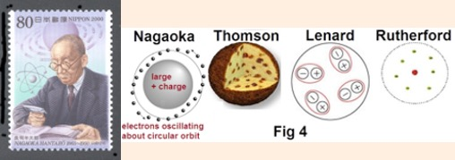
FIG. 4: Hantaro Nagaoka - 1904. “I have rejected Thomson's theory and made my own. My atomic model is like a 'miniature solar system', if you will.” Source (right): “Nagaoka Model of the Atom”.14
In late 1903 during the Meiji period, Hantaro Nagaoka (1865-1950) developed the earliest published quasi-planetary model of the atom, known as Nagaoka’s Saturnian Model. In 1887 he graduated from Tokyo University, and spent his postdoctoral period in Vienna, Berlin, and Munich with the early European pioneers in theoretical and experimental nuclear physics. He returned to Tokyo to take up a professorship, and later became known as Japan’s foremost modern physicist. Later he worked on the Japanese atomic bomb project in WWII.15
In 1934, Tohoku University professor Hikosaka Tadayoshi's "atomic physics theory" was released. Hikosaka pointed out the huge energy contained by nuclei and the possibility that both nuclear power generation and weapons could be created.
Born in the late Meiji period, after University graduation Dr. Yoshio Nishina visited the Cavendish Laboratory, Georg August University in Göttingen, and did research with Niels Bohr in Copenhagen. In 1928, he co-authored the Klein-Nishina formula for the Compton Effect. By 1936, he had built his first 26 inch cyclotron in his Tokyo laboratory at the Institute of Physical and Chemical Research or RIKEN (Rikagaku Kenkyusho). (Rhodes p.346)16 More than 100 of the best young scientists worked under Nishina at the RIKEN, a significant indicator that he was provided with substanial funding for a very important research project. With help from one of several assistants who had trained at Berkeley, by 1938 Nishina was building a 60-inch cyclotron successor with a 250-ton magnet, through collaboration with Ernest Lawrence at Berkeley, who invented the cyclotron in 1930. (Rhodes p.346)16 Ernest Lawrence had two 250-ton magnets constructed, one for himself and the other he had shipped as a gift to Nishina in Japan.
In April 1941, the official order came from Army Minister Hideki Tōjō for the Army Air Force authorizing research toward development of an atomic bomb.17 The Committee on Research in the Application of Nuclear Physics was organized, and chaired by Nishina, with other noted scientists appointed such as Hantaro Nagaoka. Bunsaku Arakatsu at Kyoto University, headed up the Naval F-Go nuclear research program.17 Arakatsu had studied at the Cavendish Laboratory at Cambridge University under Rutherford, and his Kyoto team included Hideki Yukawa who was the first Japanese physicist to receive the Nobel Prize in 1949.17 Nishina was head of the Army Ni-Go project, and Uranium 235 enrichment in a Thermal Diffusion Enrichment facility.17 Arakatsu was head of the F-Go project and worked on Uranium enrichment with the centrifuge, which was more successful.17
GENZAI BAKUDEN (GREATEST FIGHTER): Japan’s Atomic Bomb 1945
Following World War II with General MacArthur’s occupation of Japan, the U.S. government was shocked to discover that Japan was ten years ahead of the U.S. in theoretical and experimental physics. In 1940 the Nishina Laboratory of the Institute of Physical and Chemical Research in Tokyo had built the largest cyclotrons in the world. Cyclotrons found in Tokyo by the invading U.S. Army were destroyed.18
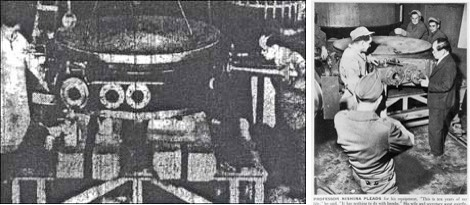
FIG. 5: Japanese Cyclotron: (Left) Dr. Yoshio Nishina at work on the atom. In 1940, Japan’s advanced research on atomic energy was demonstrated by the largest atom smashing cyclotron in the world. (Right) 1945: Dr. Nishina pleading with the dismantling team: “This is ten years of my life - it has nothing to do with bombs” - but the U.S. Army on General Groves’ orders, destroyed the Japanese cyclotrons. This outraged the global community, and put scientific research thereafter out of the reach of the military and under civilian control. Source: Michael Craddock19.
Dr. Yoshio Nishina, who had been nominated for the Nobel Prize for his pre-war work in nuclear physics, continued despite the war, with two atom bomb programs. The one in Tokyo (Ni-Go) he headed for the Japanese Navy, and one in Kyoto (F-Go) under Arakatsu, that Nishina began in 1942. The Kyoto program had to be moved by Nishina to Hungnam, North Korea, in early 1945 as General MacArthur and his troops got closer to Japan. This cost 3 months of time on the project, delaying the test enough that the U.S. dropped their atomic bomb on Hiroshima before the Japanese were ready to detonate theirs. The Korean project was well staffed with about 40,000 Japanese workers.18
Although the US and Japanese Governments denied it, as well as the US military, historians such as Robert Wilcox and Atlanta Journal Constitution writer David Snell believed the Japanese succeeded. Snell, an agent with the Criminal Investigation Detachment (CID) of the U.S. Army’s XXIV Corps (U.S. occupation forces in Korea), said he obtained his information during an interview in Seoul with the Japanese Officer who was head of security and counter-intelligence at the Konan plant, and was awaiting repatriation back to Japan.18
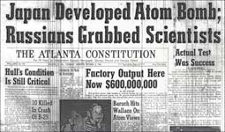
FIG. 6: Russians Grab Japanese Atomic Bomb Scientists: “Since V-J Day wisps of information have drifted into the hands of U.S. Army Intelligence of the existence of a gigantic and mystery-shrouded industrial project operated during the closing months of [WWII] in a mountain vastness near the Northern Korean coastal city of Konan [Hungnam]. It was near here that Japan’s uranium supply was said to exist.” Source: David Snell, p.1.18
Snell had interviewed the Japanese Officer in charge of counter intelligence at the Konan project, about the test:
Japan developed and successfully tested an atomic bomb three days prior to the end of the war. She destroyed unfinished atomic bombs, secret papers and her atomic bomb plans only hours before the advance units of the Russian Army moved into Konan, Korea, site of the project… Japan had perfected and successfully tested an atomic bomb as cataclysmic as those that withered Hiroshima and Nagasaki.20
Observers just 20 miles away were blinded by the flash of light:
The light in the east where Japan lay grew brighter. The moment the sun peeped over the sea there was a burst of light at the anchorage blinding the observers who wore welders' glasses. The ball of fire was estimated to be 1,000 yards in diameter. A multicolored cloud of vapors boiled toward the heavens then mushroomed in the stratosphere.20
AUSTRIAN ENGINEER SETS UP JAPAN’S A-BOMB PROJECT
Following the publication of Snell’s article, the U.S. conducted a thorough investigation and concluded that the Chosen Nitrogen Fertilizer Plant at Konan “produced heavy water jointly with the Japanese Navy” since “pre-war times.”21
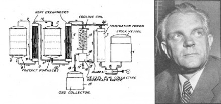
Fritz Hansgirg’s heavy water apparatus. Fritz J. Hansgirg
FIG. 7: Pre-WWII Austrian Engineer Clandestinely Sets up A-Bomb Template for Japan, U.S., and Soviet Union: Fritz J. Hansgirg, an Austrian engineer, developed a method to mass produce heavy water for the Japanese atomic bomb project, and a method to mass produce high purity magnesium to extract uranium from Monazite, a uranium ore mined in North Korea. Source: B.C.Streifer, DCBureau (2013).21
The magnesium plant at Konan was designed and built in the 1930’s by a brilliant Austrian-born chemical engineer by the name of Fritz J. Hansgirg. Born in Graz, Austria, Hansgirg helped develop a less-costly method of mass-producing magnesium of extremely high purity... So in the fall of 1934, Hansgirg sailed from Austria to Japanese-occupied Manchuria, and later to Konan, where he lived and worked for six years before the war establishing the foundation of the program that would produce the Japanese atomic bomb during WWII.
At Konan, Hansgirg helped the Japanese design a magnesium plant, and “in my spare time,” Hansgirg said, an ingenious method of mass-producing heavy water… While it is not known for certain if the Japanese at Konan later used Hansgirg’s magnesium process to extract uranium from Monazite or his heavy water process to produce weapons-grade plutonium from uranium in an atomic pile, it is entirely possible.21
Wilcox described in his book, Japan’s Secret War: Japan’s Race Against Time to Build Its Own Atomic Bomb,22 that on August 12, 1945, three days after the Nagasaki bombing and three days before Japan signed the articles of surrender, the Japanese “had developed and successfully test-fired an atomic bomb” in Hungnam, North Korea.
In 1999, this was confirmed by an article in the Tokyo Shimbun: “Atom Bomb Experiment Undertaken by Former Japanese Armed Forces in Korean Peninsula Just Prior to the End of the War, According to Secret Investigation by GHQ [General Headquarters, U.S. Army. -ed]23 According to the Tokyo Shimbun, a secret, 300-page GHQ/SCAP report was discovered at a U.S. archive, by the Washington D.C. Bureau of JiJi Press, the Japanese news agency. According to that GHQ report, Japan tried to develop the atomic bomb at the Chosen Nitrogen Fertilizer Factory at Konan during WWII.23
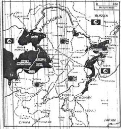
FIG. 8: Japan Tested Atom Bomb: This was the war map of Korea in August, 1945, when the Russian spearhead pushed down the western coast in the drive on Konan, site of the Japanese atomic project. The atomic test was made at an unchartered inlet in the Sea of Japan. In 1945, the 38th parallel just above Seoul divided Russian occupied territory from American. Konan remained tightly under Russian control. Russian proximity to the Konan project area prompted Japan’s decision to destroy the remaining bombs and assemblies. The seven top Japanese nuclear scientists were taken back to Russia and tortured.20
Although there is still controversy over whether or not Japan had a successful atomic bomb program, the evidence is overwhelming that Japan successfully detonated an atomic bomb on August 12, 1945. Disinformation from various sources described a “partially successful detonation”, or a “small bomb”, when in fact a small nuclear weapon is much more difficult to make than a large one, and the effort to miniaturize nuclear weapons was not undertaken until Ted Taylor miniaturized the entire US nuclear weapons program. His (and other nuclear scientists) experiences with the Department of Defense left him disillusioned and alarmed:
The real driving force in the nuclear arms race is the weaponeers, the people who come up with the concepts. It all starts with that devilishly creative act of imagining something which is infinitely destructive. Then they go to Franklin Roosevelt or Harry Truman or Ronald Reagan and say, "Here's this thing. Do you want that?' The answer is invariably, 'You bet we do!’ Ted Taylor, At Work In The Field of the Bombs.24
All three of the President’s that Ted Taylor mentions as “weaponeers” are correct, but what he and most scientists on the Manhattan Project did not understand, is that those Presidents were put in office by direct or indirect funding and influence of the City of London and Wall Street bankers, including the Rockefellers. Those Presidents were also handled while they were in office. Colonel Henry Stimson, Secretary of War in World War I and II, was Skull and Bones, and a Wall Street banker with close ties to London financiers.25 Stimson even made the decision to drop the atomic bombs on Hiroshima and Nagasaki rather than General Groves who had other targets designated and was head of the U.S. Army Manhattan Project. (G.Hodgson p.323)25 Bernard Baruch also advised Presidents in WW I and II, and represented the interests of the City of London financiers.
David Snell’s exposure of the Japanese atomic bomb project20 was denied by Dr. Yoshio Nishina, who told the press “It is a complete lie… There were no such experiments in Chosen (Korea). However, there was a fertilizer factory in Konan . . .”
Even today in Japan, when historians tell Japanese that there was such a project, many Japanese react with disbelief. Japan's postwar official policy, that she does not and never will seek to be a nuclear-armed country, seems to have inhibited discussion of the project. Japan's wartime atomic research, in Japan, has become a social secret. D. Shapley, “Nuclear Weapons History: Japan's Wartime Bomb Projects Revealed” 1978
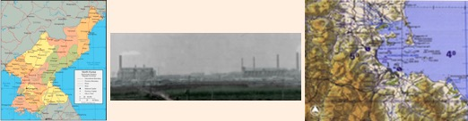
FIG. 9: Japan Atomic Bomb Project In North Korea In WWII: (left) Konan Province (green) where the Japanese located their atomic bomb project, (center) Chosin Nitrogen Fertilizer Plant in Homan/Hungnam (Konan), and (right) a probable location of the site of the atomic bomb test August 12, 1945. Source: “Japanese Atomic Bomb” Subtitle 3.27
TEMPLATE FOR EARLY NUCLEAR WEAPONS PROGRAMS SET UP BY AUSTRIAN ENGINEER FRITZ J. HANSGIRG
Close ties between the early Japanese and European theoretical physics pioneers had been well established since the Meiji (late Edwardian) Period. Austrian engineer Fritz J. Hansgirg arrived in Japanese occupied Manchuria in 1934 with a purpose.21 Between 1934 and 1938, he disappeared; it is very likely that he was in Japan.21 Meiji Era theoretical physicist Hantaro Nagaoka who had studied in Vienna, Berlin, and Munich, was appointed to the official Japanese atomic bomb committee established in 1941. Nishina was head of the atomic bomb committee, and in the 1920’s had studied and conducted research with Niels Bohr in Copenhagen, visited the Cavendish Laboratory, and the Georg August University of Göttingen. Hikosaka Tadayoshi’s contemporaries were Otto Hahn, Fritz Strassmann, Lisa Meitner and her nephew Otto Frisch. Bunsaku Arakatsu, at Kyoto University, had studied at the Cavendish Laboratory at Cambridge University under Rutherford, and in Berlin under Einstein. His Kyoto team included Hideki Yukawa who was the first Japanese physicist to receive the Nobel Prize in 1949 when he was a Professor at Columbia University (Rockefeller controlled).
These close ties between Japan’s chief scientists and European physicists indicate that Fritz J. Hansgirg, an engineer, had probably been in Japan secretly setting up Japan’s atomic bomb project in laboratories, institutions, and preparing students and professionals before the production phase proceeded in north Korea.21
In 1938 he went to north Korea where industrialist Jun Noguchi had launched a heavy water production program some years previously.21 In 1926 Noguchi founded the Korean Hydro Electric Company at Konan (now known as Hungnam) in north Korea, and later became the Chosin industrialist fertilizer company, used as a major production facility of the Japanese atomic bomb project in north Korea.21
Hansgirg later spent 6 years in north Korea working for the Japanese, inventing technologies that produced heavy water, and extracted Uranium from Monazite ore.21 This indicates that the Japanese atomic bomb project may have started in north Korea with industrialist Noguchi at least 6 years or more (late 1920’s or early 1930’s) before Hansgirg arrived, with the start of Chosin heavy water production for the Navy.21 The Konan production phase of the project included 40,000 Japanese workers, 25,000 engineers and scientists, and a top secret inner sanctum hidden deep in a cave involving 400 specialists.21 The entire project was carefully compartmentalized for security reasons. Hansgirg must have arrived from Austria in the earliest phases of the Japanese effort, a project that the Vienna school seeded in the early 20th century, so that he could develop the template to set up Japan’s atomic bomb project. The template would then be handed off to US intelligence for the Manhattan Project, and later handed off to the Soviet Union as the Red or Soviet elite forces overran the Konan bomb facilities that were not evacuated, including seven top Japanese scientists. There were certainly strong common roots shared by all three programs.
A secret CIA document, “Chasing Bitterfeld Calcium” by Henry S. Lowenhaupt, was redacted and released on July 2, 1996, and referred to the Japanese atomic bomb project in North Korea:
Then we learned that Soviet technicians had been intensely interested in the similar Hansgirg process furnaces at the Hungnam Chemical Complex in North Korea when that country came under Soviet control in 1945. H.S. Lowenhaupt, “Chasing Bitterfeld Calcium” (1996).28
Similarities between the Japanese Atomic Bomb Project, U.S. Manhattan Project, Soviet Union Nuclear Weapons Program, and the British Nuclear Weapons Program indicated a common source for many aspects of those top-secret programs. All of them had knowledge of a self-sustaining fission reaction in a heavy-water-moderated pile, knowledge of reactor theory, the best arrangement for the lattice of fuel elements, experience in the production and casing of metallic Uranium, detailed designs and pilot programs for the production of heavy water, and experiments with different methods of isotope separation for concentrating the fissile Uranium-235 (especially the gas centrifuge method). They had a body of know-how, experimental machines, and basic materials unique outside Britain and the United States when they reached the production stage.
KICHIKU-BEI EI: ENGLISH AND AMERICAN DEVILS AND DEMONS
...there is a fundamental connection between Fukushima and Hiroshima, Nagasaki, between nuclear power and nuclear weapons. The technology of nuclear reactors was actually developed, of course, through the Manhattan Project, and it is through the development of foreign nuclear weapons, nuclear bombs, that the technology for nuclear power plants came about, and the same technology is being used within this. So there is this fundamental link between the two. As well as it’s through the creation of plutonium, this connects to, of course, the development of nuclear weapons, which threaten the whole of humanity, and also nuclear power, which puts all of humanity at a huge risk. So I personally believe that it is important to abolish both of these, both nuclear weapons and nuclear power plants. Naoto Kan, Prime Minister of Japan (2010-2011), March 11, 2014, Third Anniversary of the Fukushima disaster.49
Ex-Japanese PM on How Fukushima Meltdown was Worse Than Chernobyl & Why He Now Opposes Nuclear Power. DemocracyNow! March 11, 2014. http://www.democracynow.org/2014/3/11/ex_japanese_pm_on_how_fukushima
U.S. President Lyndon Johnson (1963-69) and Prime Minister Eisaku Sato (1964-72). A new strategy to extend the “nuclear umbrella” over Japan, in the escalating “threat” of an East Asian arms race, began with a secret meeting in the 1960’s between U.S. President Lyndon Johnson (1963-69) and Japanese Prime Minister Eisaku Sato (1964-72).29 This meeting was prompted by China’s 1964 nuke test. n
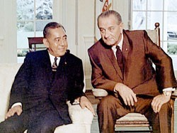
FIG. 10: 1960’s Secret Transfer of Nuclear Technology from US to Japan: US covertly transferred nuclear materials and technology to Japan over decades, violating US laws and treaties. Initiated in a secret meeting between Prime Minister Sato and President Lyndon Baines Johnson, the policy persisted through many administrations.29
President Nixon (1969-1974) and Prime Minister Eisaku Sato (1964-72). Although Prime Minister Sato had asked President Johnson for the repatriation of Okinawa and removal of U.S. nuclear weapons, it was not negotiated until Nixon was President.29 The U.S. nuclear weapons from the Korean War had been warehoused in Okinawa for fourteen years until the Vietnam War. During President Nixon’s term in office (1969-1974), behind the scenes and before Sato had won the Nobel Peace Prize in 1974 for his Three Non-Nuclear Principles, Sato negotiated the terms for the return of Okinawa to Japan.29 Okinawa, had been occupied by the U.S., since WWII. Sato quietly allowed the U.S. to retain military control of its bases in Okinawa after repatriation, a very controversial decision.
Without Japan asking for it, in 1960 Vice President Nixon gave a $500 billion secret fund (the M-Fund) from the stolen treasure looted by Emperor Hirohito from China and twelve SE Asia countries in WWII, to the Liberal Democratic Party (LDP) in return for LDP kickbacks that got Nixon elected President in1969.30 That secret fund set up by General MacArthur and others with Emperor Hirohito’s stolen treasure, funded Sato’s election as Prime Minister of Japan in 1964.
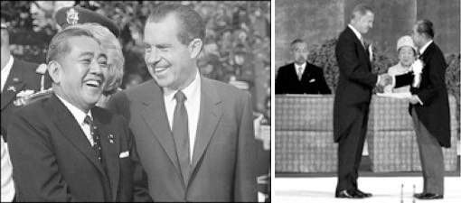
FIG. 11: Return of Okinawa and the secret Yamashita’s Gold Treasure Fund: (Left) Best ‘treasure’ friends Sato and Nixon, were both elected with dirty money from the stolen gold treasure looted across Asia by Emperor Hirohito in WWII.30 (Right) On May 15, 1972, in a reversion ceremony witnessed by Emperor Hirohito and Empress Nagako, Vice President Spiro Agnew presents Prime Minister Sato with documents returning Okinawa and the Ryukyu Islands to Japan. Source: Seagraves, Gold Warriors (2003)30; Ralph Payne, Stars and Stripes, May 15, 1972.31
After Nixon left office, a new strategy to secretly transfer classified nuclear technology from the U.S. to Japan began. It escalated under Presidents Ford (1974-77), Reagan (1981-89), and George H.W. Bush (1989-1993).29
President Gerald Ford (1974-77) and Cabinet Minister Yasuhiro Nakasone. In order to get elected Prime Minister, Nakasone agreed to outwardly support the Non Proliferation Treaty (NPT), but opposed ratifying it. Under President Gerald Ford, Nakasone received a pledge from Ford not to interfere with Japan’s nuclear programs, even when they included material and technology ideally suited to nuclear weapons use. With Ford’s guarantee, in 1976 Japan finally ratified the NPT and Japan’s nuclear commerce continued without US interference.29
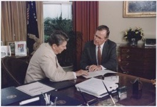
FIG.12: Arms Race In Asia. Rockefeller asset, President Reagan, sold nuclear power to China, a $10 billion reactor deal that upset Japan. This escalated the arms race in Asia and “set up” Japan for illegal transfer of Plutonium technologies under President George H.W. Bush, former CIA Director.29
President Ronald Reagan (1981-89) and Prime Minister Yasuhiro Nakasone (1982-1987). In 1969 Yasuhiro Nakasone was Director of the Japanese Defense Agency, and from a new generation of pro-nuclear politicians. He co-authored a 1969 policy paper that said:
For the time-being Japan’s policy will be not to possess nuclear weapons. But it will always maintain the economic and technical potential to manufacture nuclear weapons and will see to it that Japan won’t accept outside interference on this matter.29
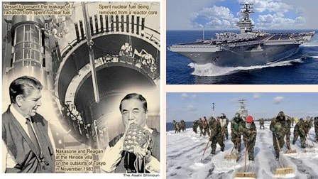
FIG. 13: Nuclear Leverage: (Left) As Prime Minister Nakasone made a secret agreement with President Reagan to covertly introduce MOX (mixed Uranium and Plutonium oxides) nuclear fuel to Japan. (Right) U.S. Navy Sailors scrub contaminated deck of the USS Ronald Reagan after the Fukushima disaster. At least 70 are now sick and dying from acute exposure to fresh fission products. Source: (L) T. Suzuki, Asahi Shimbun, July 21, 201132; (R-Bot) D. Kashi, IBTimes, Dec. 24, 2013.33
After Prime Minister Nakasone made the highly secret MOX deal with Reagan, it could not be by chance that the USS Ronald Reagan aircraft carrier was sitting 2.5 miles offshore from Fukushima, when Reactors 3 and 4 blew up, and spewed Plutonium all over the Northern Hemisphere within two weeks. The Admiral in command of the USS Ronald Reagan was not on board the aircraft carrier at the time of the explosions.33
President George H.W. Bush (1989-93). Under President George H.W. Bush (1989-93), through legislation reversing U.S. control of nuclear materials pertaining to Japan, the U.S. ceded control of U.S.-origin nuclear materials shipped to Japan.29 Classified technology on Plutonium separation from the US DOE, and breeder reactor research (to make Plutonium) worth many billions of dollars was turned over to Japan with few safeguards against proliferation. Japanese scientists were allowed into high security DOE nuclear facilities in the US.29
Just as it did with the WWII secret atomic project in Japan and northern Korea, which is strongly denied even today, the Japanese government post-WWII hid their nuclear developments from the Japanese public by discouraging the media and historians from investigating their secret activities, fearing that the Japanese public would be very critical of the government’s criminal violation of the post-WW II pacifist Japanese Constitution. Most Japanese today believe that the U.S. dropped atomic bombs on Hiroshima and Nagasaki in 1945 because of the Imperial Government’s war aggressions in WWII, and are stubbornly opposed to Japan changing its pacifist Constitution.
‘MYTH OF SAFETY’ IN JAPAN
Former Fukushima Prefecture Governor Eisaku Sato (1988-2006), on Dec. 6, 2012, commented:
Fukushima accident is not natural disaster, it is man-made disaster. The government was only telling nations that “Nuclear is safe”. Even after the accident they did not fulfill accountability of the accident.34
Eisaku Sato: Former Governor of Fukushima Prefecture, Dec. 6, 2012, Nuclear Free Now https://www.youtube.com/watch?v=58vhL_pPIgE
After the end of WWII the secret nuclear weapons program in Japan continued but remained undercover, with the same men leading the new nuclear power program with enthusiastic encouragement from the U.S. government and the corporate interests of Rockefeller-owned GE and Westinghouse. U.S. interests, and agents such as Daniel S. Watson, used the Japanese ego and where the Japanese were in the technology trajectory, to load the time bomb known as Fukushima Dai-ichi nuclear power plant.
As an elected member of the Diet, Nakasone emphasized the safety and necessity of nuclear power plants as he proposed the Atomic Energy Basic Bill at a House of Representatives special committee on the promotion of science and technology in December 1955.
“Nuclear power used to be a violent animal, but has now become a farm animal. Japan should increase its national strength through the promotion of nuclear power in an effort to gain a rightful place in the international community,” Nakasone told the panel at the time.
Former Prime Minister Nakasone pushed the bill through:
Together with a handful of like-minded legislators, I began exploring the possibility of including a nuclear-specific budget in the fiscal 1954 budget bill. After I consulted party executives in strict confidence, I took the Lower House Budget Committee by total surprise by proposing a 235-million-yen nuclear budget. The rest is history: The bill became law.
I had made sure the public didn't catch on to what I was up to. I feared people could block my proposal out of ignorance. Sure enough, after the bill became law, certain members of the press made a huge issue of what I had done. "Nakasone has created a budget for building an A-bomb," they claimed. Takafumi Yoshida, Asahi Shimbun, May 23, 2011.35
Fukushima reactors were “legally” loaded with Uranium and depleted Uranium nuclear fuel. In 2002, after GE whistleblower Kei Sugaoka warned Governor Eisaku Sato about MOX fuel at Fukushima, Sato passed a law prohibiting MOX fuel in Fukushima Prefecture. Secretly in September 2010, six months before the Fukushima disaster, MOX fuel containing Plutonium was illegally loaded into at least Reactors 3 and 4 at Fukushima.37
Kei Sugaoka GE/Tepco Whistleblower (May, 2011) [09:29] 福島原発陰謀 東電トラブル隠し事件 https://www.youtube.com/watch?v=fBjiLaVOsI4
FIG. 14: The Man Who Shut Down 17 Nuclear Reactors In Japan: U.S. whistleblower GE engineer Kei Sugaoka (seated right) shown on TBS and JNN TV in a June 2000 meeting with Fukushima Governor Eisaku Sato (seated in middle). Mr. Sugaoka informed Governor Sato that TEPCO had falsified safety documents, and had put MOX fuel in a reactor at Fukushima Dai-Ichi nuclear power plant, warning him that it was unstable and dangerous. This exposure of blatant and dangerous political and administrative corruption in the nuclear industry resulted in a 2002 unprecedented temporary shut down of 17 nuclear power plants. Source: Anthony T., CRITICALITY a critical thinking blog, May 8, 2011.37
In September 2010, an Israeli security team from Dimona had access to the Fukushima Dai-Ichi operating system and Siemens controllers when they installed a new security system at Fukushima Dai-Ichi plant.38,39 In September 2010, the Stuxnet worm virus was introduced to the operating system using Siemens controllers at Fukushima.38,39 By November 2010, the Yumiuri Shimbun had reported Stuxnet was identified in over 70 computers in Japan. Three months later, after the Fukushima disaster, it was widely reported that the Stuxnet virus had sabotaged the emergency startup of the operating system and backup systems after the earthquake, causing a global nuclear disaster.38,39
After it was reported that the Stuxnet virus was in the Fukushima operating system, Ms. Moret’s investigation revealed that it was created in six months by a team of CIA and Siemens specialists at the Idaho nuclear weapons lab in about 2004-5.40 She also discovered that in a joint U.S.-Israel project, it was handed off to Israel by the CIA to be covertly tested for the first time in late 2009 or early 2010, at the Bushehr Uranium enrichment facility in Iran. It destroyed a fifth (nearly 1000) of Iran’s nuclear centrifuges by causing them to spin out of control.
From "Foreign Policy":
The sober reality is that at a global scale, pretty much every single industrial or military facility that uses industrial control systems at some scale is dependent on its network of contractors, many of which are very good at narrowly defined engineering tasks, but lousy at cybersecurity.
Or as one of the architects of the Stuxnet plan told Sanger: “It turns out there is always an idiot around who doesn’t think much about the thumb drive in their hand.” M. Kelley, Business Insider, Nov. 20, 2013.40
The misapplication of science and technology has created the Stuxnet worm virus, and other industrial espionage viruses, that at any time can be the cause of lethal meltdowns and nuclear explosions in any nuclear reactor or nuclear technology in the world. Life on this planet cannot afford another Fukushima nuclear disaster, yet we are standing at the precipice of the end of life on earth because of nuclear technologies.
“NUCLEAR VILLAGE”: NAKASONE’S PLUTONIUM TIME BOMB
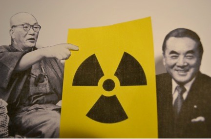
FIG. 15: Two Key Persons With Ambitious Dreams For Nuclear Power: War Criminal and former Police Official Matsutaro Shoriki (left) known as “Father of Nuclear Power” in Japan, and former Minister of Defense and Prime Minister Yasuhiro Nakasone who made the secret deal with Rockefeller spokesman President Ronald Reagan to put MOX fuel in Japanese Genpatsu (nuclear power plants). (© Kiyomi Obo, Sep. 19, 2012) Source: Kiyomi Obo, Global Analysis 2012.41
This new nuclear program, exported to Japan from the U.S., came with the expectation that operation of a breeder reactor would be part of it – despite being a direct source of bomb grade Plutonium for the Japanese.29 The Monju nuclear power plant was proposed for the breeder reactor program, but public opposition against it has gone on for decades.
U.S. President Dwight David Eisenhower’s speech at a U.N. General Assembly session in December 1953 called for the peaceful use of atomic energy. In the 1950’s, Eisenhower under a program of “Atoms for Peace,” gave nuclear reactors to energy resource-starved countries like Japan and India, as “economic and moral support.”29 However Eisenhower’s false “altruism” and promise of “cheap energy” was hardly cheap, since the full cycle cost of nuclear power and nuclear disasters, makes it the most expensive form of energy, that only a government can afford through taxpayer revenue. Eisenhower had very strong ties to the international financiers through his mentor Bernard Baruch, a high level agent of the City of London financiers.
A Japanese newspaper Yomiuri Shimbun, with a conservative and extreme-right pro-nuclear bias, was the main media tool used to convince the Japanese public on the benefits of nuclear power. After meeting with a Yomiuri Shimbun executive, U.S. Agent Daniel S. Watson commented to Japanese NHK national television:
It was obvious for me, you had to have [a] newspaper in Japan. It must to be [a] big one. It has [a] strong influence on the society. K. Obo, Global Analysis 201241
At that meeting, Yomiuri Shimbun executive Hidetoshi Shibata advised Watson:
Japan has a proverb that poison drives out poison. Nuclear is a double-edged sword. To drive anti-atomic bomb, we should spread peaceful use of nuclear power, and give them hope. K. Obo, Global Analysis 201241
During the 1950s, Matsutaro Shoriki, the head of the Yomiuri Shimbun who was a former police official and was classified as a “Class A” war criminal after WWII, used his newspaper to promote nuclear power in Japan as an agent of the CIA. K. Obo, Global Analysis 201241
In 2006, Tetsuo Arima, a professor specialising in media studies at Waseda University in Tokyo, published an article that Shōriki acted as an agent under the codenames of "podam" and "pojacpot-1" for CIA to establish a pro-US nationwide commercial television network (NTV) and to introduce nuclear power plants using US technologies across Japan. Arima's accusations are based on the findings of de-classified documents stored in the NARA in Washington, DC. In 1956, Shōriki became chairman of the newly created AEC in January, and in May of that year was appointed head of the brand-new Science and Technology Agency, both under the cabinet of Ichirō Hatoyama with a strong support behind the scenes from CIA. He is later called "the father of nuclear power".42
The United States deliberately allowed Japan access to the United States’ most secret nuclear weapons facilities while it transferred tens of billions of dollars worth of American tax paid research that has allowed Japan to amass 70 tons of weapons grade plutonium since the 1980s, a National Security News Service (NSNS) investigation reveals. These activities repeatedly violated U.S. laws regarding controls of sensitive nuclear materials that could be diverted to weapons programs in Japan. The NSNS investigation found that the United States has known about a secret nuclear weapons program in Japan since the 1960s,⚛ according to CIA reports. Trento, J., DC Bureau.org, April 9, 2012.29 ⚛(Dr. Lawrence gave Dr. Nishina a 250-Ton magnet in 1940 - ∴The CIA (OSS) knew in 1940. -ed)
A declassified U.S. document ultimately exposed the deep involvement the CIA played in pushing nuclear power in Japan through CIA asset Shoriki/’Podam,’ and that it was an important part of ‘World Strategy’.43 The Council on Foreign Relations (CIA), a creation of David Rockefeller, determines U.S. Foreign Policy, and ties nuclear power to the international financiers who determine ‘World Strategy’.
A now declassified U.S. Central Intelligence Agency (CIA) document describes the process of introducing nuclear power to Japan. It states that since its relations with Podam (a code name given to Shoriki) had been matured, the United States could probably offer to cooperate on the issue.
The document suggests that Japan’s nuclear power development progressed as an important part of the U.S. world strategy.43
⚛ PHYSICAL STATE OF FUKUSHIMA NUCLEAR PLANT ⚛
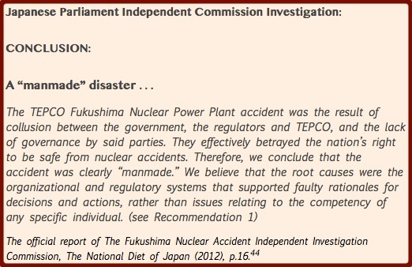
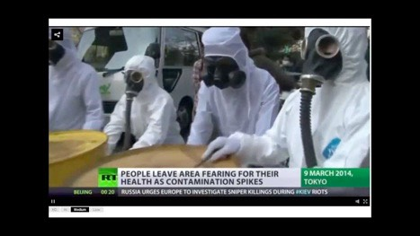
FIG. 16: Chubu University Professor Estimates 3/31/2015 Last Day of Japan. Professor Takeda Kunihiko has stated that radiation levels have been increasing in Japan since Sept. 2011. Measurements in Mie Prefecture, 500 km. south of Fukushima, averaged 0.10µSv/hr in early 2012, increasing by 0.004µSv/hr since then. Using that data, he made a simplified calculation that the yearly exposure will exceed the legal dose of 5mSv/yr by March 31, 2015, and people should no longer be living in Japan by that time. Source: (Image) Russia Today, March 19, 201445; “Prof. Takeda ‘3/31/2015 is the last day of Japan,” Fukushima Diary 27, 2012.46
INTERNAL CONTAMINATION: Professor Takeda Kunihiko has provided an important comment pointing out the constant daily radiation exposure of Japanese citizens, and in addition to that, the daily rate of increase from new releases. With his simple calculation he has made a valid point. The government standard for annual accumulated external exposure will be exceeded by March 31, 2015, when Japan will no longer be habitable by the government’s own standard.46 The government standard does not consider the internal dose, cumulative dose received, supra-linear effect of very low doses that increase the damage, and the synergistic effects of complex exposures. Taking those factors into consideration would reveal, that the actual radiation exposure to the public is much higher, and is being hidden by the government.
MELTDOWNS AND RAD RELEASES PRIOR TO TSUNAMI
1981 SIMULATED MELTDOWN: Foreshadowing Fukushima, a simulated meltdown at a nuclear power station was published by the Oak Ridge National Laboratory (U.S. Department of Energy) in 1981 for the Nuclear Regulatory Commission: “Station Blackout at Browns Ferry Unit One – Accident Sequence Analysis.” 47 This report provided a timeline for Ms. Moret to predict, track, and monitor the timing and sequence of parallel developments at the Fukushima disaster as it was happening. Some months later, after months of denials, lies, and disinformation, TEPCO released a power point presentation that affirmed the accuracy of the Browns Ferry simulation, and confirmed timing and sequence of events at Fukushima.47
RAD RELEASES: On March 11, 2011, the Great Tohoku earthquake occurred at 2:46 PM followed by a large tsunami about an hour later. A TEPCO perimeter radiation monitor, 1 mile (1.5 km) from Reactor Unit 1, recorded elevated radiation levels at 3:29 PM indicating a radiation leak at Unit 1, 43 minutes after the earthquake, and preceding the tsunami. This could indicate that either Reactor Unit 1 was in meltdown, damaged, or that earthquake damage to the spent fuel pools was causing radiation releases. TEPCO later released documents indicating that the water level inside the inner vessel of Reactor 1 fluctuated after the earthquake indicating damage to the reactor and cooling system, but the readings went blank at around 3:30 PM when the tsunami flooded the plant. The most likely cause of the reported increase in radiation outside the reactor building, was shutdown of the cooling system, initiating a meltdown that started within a short time after the earthquake.48 This indicates that the earthquake caused the greatest damage, the rad release and meltdowns in all four reactors (Reactor 4 was loaded with fuel and on standby when the earthquake happened)95 that started before the tsunami, and therefore did much greater damage than the tsunami.
MELTDOWN: According to Naoto Kan, the Prime Minister of Japan at the time, the reactors were in full meltdown by 7:00 PM, four hours after the earthquake.49,50 He also stated that the melted fuel was burning a hole through the reactor container [and dripping onto the floor] by 7:00 PM, the first time a “melt through” had been reported in a nuclear reactor.49,50 Former Prime Minister Kan was interviewed on the third anniversary of Fukushima, March 11, 2014, about his experience as Prime Minister at the time of the disaster:49,50

On that day, at the time of 2:46 in the afternoon on Japanese time, I was at the House of Councilors for a budgetary committee meeting. At that time, the earth started to shake… … I received information that at the Fukushima Daiichi nuclear power plant, all of the electricity had been stopped, and not only this, but all of the cooling functions at the plant had failed. And at the time of hearing this information, I felt this terrible chill or cold all over my body and a feeling which I can never forget. And the reason for this was, of course, knowing that even though the nuclear plant had been stopped, for a long time after this it was continuing in this critical situation, and there was the potential risk that the nuclear fuel could actually go into meltdown.
… And only four hours after the earthquake occurred, actually, was when it experienced meltdown in the reactor one. And even through the container of thickness 20 centimeters, there was actually a hole being burned through, and melted fuel had been actually leaking through to the outside of the container. And now we know this information, that this was happening at 7:00 p.m. approximately on that day. But at the time, none of this information was accurately conveyed to me.
…And this was actually the first incident of an accident where a hole in the pressure container was actually—or a hole had been created.49,50
MOX FUEL MELTDOWN IN REACTOR 3 AND Spent Fuel Pool Unit 4: The Japanese Parliament Independent Commission reported a recriticality or second meltdown in Reactor 3 on 3/21-3/22/2011:
The investigation committee stated on their final report that there is a possibility that reactor3 had the second meltdown from 3/21 to 3/22/2011. Also, it suggests the massive burst of radiation from reactor1 on 3/15, 16 and 21.44
…From those monitoring data above, recriticality can’t be clearly proven, but it is obvious that radiation was massively dispersed from reactor1 around 3/15, 16 and 21. The spike of radiation from 3/15 to 3/17/2011 is probably because of the damage of suppression chamber and dry well at reactor2 and also the venting and hydrogen explosion of reactor3. There is a possibility that the spike from 3/21 ~ 22/2011 is because of the second meltdown of reactor 3.44
The hydrogen explosions occurred in Reactors 1-4 from March 12-15, and two nuclear criticality events (producing I-131, Xenon-133, and nearly 2000 fission products) occurred in Reactor 3 on March 14 and March 21-24. The Takasaka CTBT data is missing from the station report for March 14, because the rad levels exceeded the detection limits and could not be measured, and the equipment was contaminated which compromised the data from that station. The energetic MOX nuclear fuel detonation in Reactor 3 [FIG. 21,25] on March 14, populated Uranium-Plutonium hot particles of MOX fuel from the reactor all over Japan, and around the northern hemisphere within 10 days [FIG. 32, 33, 34].51 The data for March 15-16 in [FIG. 17] represents the residual radiation levels a day after the MOX fuel criticality explosion in Reactor 3 [FIG. 21,25] and other events that may have occurred [US Deaths Figure 30, 35, 36].
Studies on hot particles around the world support this conclusion. The Norwegian study51 on hot particles collected on air filters after the Fukushima disaster reported “The authors estimate that a significant part of the Fukushima-derived radioactivity is in hot particles from spent U-Pu fuel [Reactors 3 and 4] from this filter evidence.”
…when I received the worst-case scenario from Mr. Kondo on March 23rd [2011], this was actually—we could say that we had managed to avoid perhaps one of the biggest potential crises which could have happened. Although the reactors had already happened to explode at Reactors 1, 3 and 4, and three of the reactors had already by this stage gone through meltdown….
Statement of former Prime Minister Naoto Kan on March 11, 2014.49

FIG. 17: Radiation Spikes At Fukushima: Nuclear explosion in Reactor 3 (data missing for March 14, the day of the nuclear explosion) and Reactor 2, March 15-16, 2011; recriticality event in Reactor 3, March 20-21, 2011. Source: Takasaki CTBT Station Report Feb. 22, 2011, Japan.52

FIG. 18: Radioactive Xenon Ratios March 16-28, 2011: The Xenon spikes represent fresh fission events from damaged reactors, and emerged uncontrollable nuclear reactions. The March 21-24 event was probably from Reactor 3 going into meltdown when cooling water was reduced and fluctuated. Fresh fission products supports a hypothesis of post shutdown criticality. Source: S.A. Pakhhomov (2013)53
The half-life of Xenon-133 is 5.243 days and Xenon-133m is 2.19 days. Xenon isotopes are used for Comprehensive Test Ban Treaty (CTBT) verification, and as an indicator in general of criticality events.
The Reactor 3 recriticality event March 20-24 was confirmed by ASAHI newspaper on August 8, 2011:
According to Asahi newspaper of 8/8/2011, the amount of water injection to reactor3 was about 300 tones a day until 3/20/2011, the fuel was thought to be cool down, but it was decreased to be 24 tones a day from 3/21 to 23/2011, and 69 tones on 3/24/2011, which is probably because the pressure of PCV went up.
Mr. Tanabe from Japan Atomic Energy Research Institute, who analyzed Three Mile Island accident commented, “It’s only 11 ~ 32 % of enough amount of water to cool down nuclear fuel. The fuel would have reached meltdown within a day.54
REACTOR 4 MOX FUEL: A worker at the Fukushima plant stated that Reactor 4 was loaded with fuel and on stand-by, scheduled by TEPCO for a start-up operation on the morning of the earthquake disaster.55,95 He said that workers were told to stay far away from it. Soon after the earthquake hit, Reactor 4 went into meltdown caused by shutdown of the cooling system when the plant lost electricity, and backup systems failed to work. The worker indicated that molten fuel collected in the container vessel, but no technology existed to remove it from the reactor.55 He stated that it is ‘only a matter of time’ until a melt-through occurs, with the reactor fuel possibly leaking into the sea.55
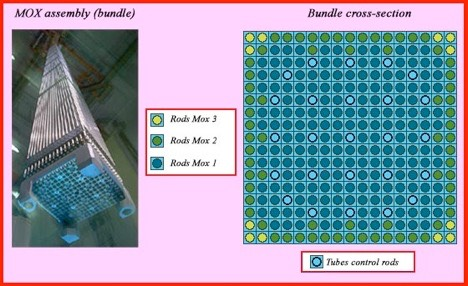
FIG. 19: MOX FUEL RODS IN SPENT FUEL POOL: The un-irradiated rods inside the Unit 4 spent-fuel pool are, in all probability, made of a new type of MOX fuel containing highly enriched plutonium. This explains why the U.S. ordered TEPCO in 2013 to remove spent fuel rods from Reactor Unit 4, a very risky process with many dangers. The presence of these MOX rods in Unit 4 indicate that Reactor 4 must have been partially loaded with MOX fuel rods.56,57
A "Mainichi Shimbun" editorial mentions in passing that the Reactor 4 pool contains 202 fresh fuel [ed.MOX] assemblies.(3) The presence of new fuel rods was confirmed in the TEPCO press release, which described the first assembly lifted into the transfer cask as an “un-irradiated fuel rod.56
Mr. Kei Sugaoka, GE engineer and whistleblower, indicated that a Hitachi-GE team [ed. …and an Israeli nuclear security team with Magna BSP, Dimona] 56 was in Reactor 4 on the day of the earthquake replacing a shroud that was only 15 months old.56
Obviously, the installation of a new shroud was not a mere replacement of a worn predecessor. It was an upgrade. The refit of Reactor 4 was, therefore, similar to the 2010 conversion of Reactor 3 to pluthermal or MOX fuel. The same model of GE Mark 1 reactor was being revamped to burn MOX fuel (mixed oxide of uranium and plutonium).56
The upgrade of the Reactor 4 shroud may well have involved the test-fitting of some MOX rods, which abandoned on the floor next to the reactor when the tsunami reached shore. In other words, in early March 2011 crane operators completely filled space inside the spent-fuel pool with new MOX rods and then simply left casks of assemblies on the roof and lowered more into the basement. That is the simplest explanation for the damage to the structural integrity of the reactor building.56
So loading the pool with MOX fuel rods, allowed them to load the rooftop with multiple heavy fuel transport assemblies, in casks made of heavy steel, directly above the spent fuel pool. It was inevitable with the earthquake and explosion that these assemblies would crash down into the pool on top of the fuel rods. The MOX fuel rods were compromised immediately and created a manufactured criticality event including powerful neutron bursts from melting of the new MOX highly enriched plutonium fuel. (This has been known since the Nagasaki bomb.)24 It was impossible to maintain the fluid level of the pool, or the integrity of the jacketing on the fuel rods with that much steel crashing down on them from the roof.
The un-irradiated rods inside the Unit 4 spent-fuel pool are, in all probability, made of a new type of MOX fuel containing highly enriched plutonium. If the frame collapses, triggering fire or explosion inside the spent-fuel pool, the plutonium would pulse powerful neutron bursts that may well possibly ignite distant nuclear power plants, starting with the Fukushima No.2 plant, 10 kilometers to the south…..56

FIG. 20: Japan Earthquake Damage To Nuke Plants. At least 7 nuclear power plants in Japan, were damaged in the events surrounding the earthquake that destroyed Fukushima Dai-ichi. Four nuclear power plants on the northeast coast of Japan on this map were damaged: Onagawa, Fukushima Dai-ichi (No.1), Fukushima Dai-ini (No.2), and Tokai Dai-ini (No.2). Source: ABC NEWS (AU), “Japan Earthquake 2011.”70
“FUKUSHIMA PLUTONIUM EFFECT”: A recent article about a new scientific phenomenon has put Fukushima in the scientific literature, “Fukushima Plutonium Effect and Blow-Up Regimes in Neutron-Multiplying Media,” reports that melting MOX fuel may lead to a neutron flux blow-up, but surprisingly there is no reference data in any scientific literature.58
FIG. 21: Reactor 3 MOX Meltdown and Criticality Event March 14: Meltdown of MOX fuel occurred on March 11, and as uncontrolled fissioning increased the temperature, the right conditions for runaway neutron flux and criticality were reached on March 14.58 The orange color lighting up Reactor building 3, indicates very high temperatures during the blow-up.62 Black smoke indicates Uranium and Plutonium fueled the energetic explosion.62 Source of video: TEPCO
A second reactor building at Fukushima Daiichi plant explodes and another core loses cooling, prompting fears of a third explosion following Friday's earthquake and tsunami that devastated Japan . . . “Fukushima nuclear plant rocked by second reactor explosion – video,” Guardian March 14, 2011. Video courtesy TEPCO.
Hence it is very important to know the anomalous temperature behavior of 238U and 239Pu capture and fission cross-sections, and furthermore it becomes critically important to know their influence on the heat transfer kinetics, since it may become a reason of the positive feedback2 (PF) with neutron kinetics leading to undesirable solution stability loss (the nuclear burning wave) as well as to a trivial reactor runaway with a subsequent nontrivial catastrophe.58
This may be a lesson of “unintended consequences,” or else it has been known but suppressed to overcome criticism of MOX fuel being used in reactors, OR this is already known and certain ‘Nuclear Villagers’ do not want this out as they promote breeder reactors, MOX fuel, Thorium fuel etc. and continue a world strategy of poisoning the world with an atmospheric haze of radioactive submicroscopic nano-particle spheres and neutron bursts to rapidly achieve their depopulation quota.
The new tactical neutron nuclear weapons that were used by the U.S. military in Iraq, Lebanon, Afghanistan, and the World Trade Center on 911, do not produce fission products but do release large amounts of neutrons that destabilize the nucleus of non-radioactive materials and damage biological systems, leaving infrastructure and terrain undamaged. The residual radiation disappears in a few weeks through neutron activation decay, and the area is safe to enter but the targeted population is massively injured and slowly dies.72
CORIUM, THE CHINA “SYNDROME,” AND HYDROVOLCANIC EXPLOSIONS
In the field of nuclear safety, the focus has been on backup safety measures for the core of the reactor and reactor fuel (as in the Chernobyl disaster), very little has been mentioned about the spent fuel pools that are in far greater danger of meltdowns, criticality events, and much more dangerous releases of nearly 2000 deadly fission products in the spent fuel rods.

FIG. 22: The Nuclear Elephant’s Foot: Following the Chernobyl disaster in 1986, lava-like masses of nuclear fuel burned through the containment vessel, then dripped out of the Chernobyl reactor into the basement below. It slowly solidified into large nuclear blobs resembling an elephant’s foot, and the surface has been gradually turning to dust from Wigner effects. Under the right conditions, dust concentrations in the air can cause violent explosions. Ten years after Chernobyl, this elephant's foot (L) gives off 10,000 Roentgens per hour at its surface. According to some experts exposure to 500 Roentgens for 5 hours is considered lethal. Source: (R) Godfrey, spiderbomb blog, March 29, 2011.59
CORIUM FORMATION: Former Prime Minister Naoto Kan has stated that the reactors were fully melted down four hours after the earthquake.49 Not only were fuel rods in the core, in full meltdown, but the molten fuel in the reactor core had burned through the reactor vessel and was dripping on the floor within four hours of the earthquake.59 The molten fuel in the rods also dripped out of the holes used for loading fuel rods into the reactor from the basement underneath the reactor. The molten fuel combined with concrete and other materials, making a mixture referred to as ‘corium.’
As it melted through the floorboard of the reactor building and into the geologic environment beneath the physical plant, it melted rock and sand that became a component of the corium concrete mixture. In the 1981 Brown’s Ferry report47 based on a simulated meltdown, the same Mark 1 reactors used at Fukushima were also at Brown’s Ferry, and based on that study, the corium at Fukushima may have penetrated completely 15 hours after meltdown.47 By August 2011, it had melted down through solid rock to the groundwater level (at about 40 feet below the surface) where it formed radioactive steam, that vented through cracks and fissures that opened up in the ground between the reactor buildings.

FIG. 23: “China Syndrome” From Four Reactor Meltdowns at Fukushima. Steam and mist over the ocean in the Fukushima lagoon, indicates that the corium reached the lagoon following the path of lest resistance in the geologic strata. The corium had reached the water table underneath the plant by July 2013. In August 2011, radioactive steam also started venting from fissures in the ground between the reactors. Deadly levels of radiation, from standing water at various places around the facility, have been measured at 1.8 to 10 Sieverts per hour on contact (5 Sv/yr is the allowable annual dose). The hot contaminated groundwater flowing into the ocean, is destroying the richest fishery in Japan along the East coast, North of Tokyo. As the corium moves toward the lagoon, heating the geologic environment, it dissolves and pulls the radioactive contamination in the underground environment with it, making itself a radiation scavenger and pump into the ocean. (an eductor of sorts -ed) Source: Image courtesy of NHK67
At the end of July 2011, when radioactive steam started venting from the ground at Fukushima, all official reporting agencies around the world stopped reporting radiation levels, and radionuclides detected and measured globally. The brute pervasive power of the ‘Nuclear Village’ to cover up this global extinction event is total, unprecedented, and indicative that the most criminal elements in the history of the world colluded to engineer the Fukushima disaster.
The hidden and secret involvement of the HAARP transmitter in Tromso, Norway, that was used to trigger the earthquake and tsunami that destroyed Fukushima, leads to the international financiers.68,69 The Tromso HAARP antenna, owned and operated for a ‘supranational’ consortium of partners known as EISCAT: Great Britain, Norway, Sweden, Finland, Germany, Japan, and China.68,69 This disaster has been caused by a WMD managed by a global seamless intelligence network, that secretly controls the world for their masters - the international financiers. Fukushima was engineered to take down the Western Economy in order to create a new global economic center as Brzezinski describes in his book, The Grand Chessboard: American Primacy And Its Geostrategic Imperatives, so well as the “Middle Space” – Russia and China.60,68,69
CHINA “SYNDROME”: It is not understood where the corium is now, but it will continue fissioning and melting down through the geologic strata, in a process that is known as China “Syndrome.” Since this is an unprecedented disaster, there is very little known about what can take place or how to prevent it. It is extremely dangerous because of the certainty of underground unprecedented nuclear explosions that may cause another major nuclear disaster at Fukushima, even more dangerous than what initially occurred after the March 11, 2011, earthquake and tsunami. The danger of mobilizing Wigner dust, nanoparticulates formed at extreme temperatures and biologically more toxic than normal dust, and particles of spent fuel, and reactor fuel in a wide spectrum of sizes, is a very serious threat to the entire global atmosphere and biosphere.
HYDROGEN EXPLOSIONS: The nuclear disaster at Fukushima destroyed four nuclear reactors and buildings at Fukushima Dai-ichi plant, caused by hydrogen explosions (and nuclear criticality events in Reactors 3 and 4), from hydrogen generated by dissociation of water molecules in the reactor cooling water. Hydrogen gas rose and collected in the top of each building, until it ignited causing flash explosions followed by white smoke and steam. This was also the cause of the Three Mile Island nuclear power plant disaster (1979), but fortunately emergency holes drilled high up in the walls of the building to vent the hydrogen before it exploded, prevented a greater disaster. Since 85% of nuclear reactors built around the world are based on GE or Westinghouse designs, with 55 in Japan, vents should have been upgraded in existing reactor buildings, and required in the design of new reactor buildings, in order to prevent explosions.
The Fukushima reactors did not have hydrogen gas escape vents.
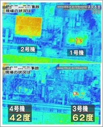
FIG. 24: Aerial Thermal IR Images of Reactors 1-4: Hot spots are visible where high levels of radioactive contamination is giving off heat: spent fuel pools, damaged reactors, fires in spent fuel pools, and fragments of spent fuel rods scattered by hydrogen explosions (1-4) and MOX nuclear detonations (3 and 4). This image indicates that much of the nuclear material remains in Reactor Units 1 and 2, after hydrogen explosions. But Reactor Units 3 and 4 have greater structural damage to the buildings and less areas of concentrated radioactivity from nuclear fuel sources, indicating much of it was probably aerosolized in the nuclear events. Source: Prior to March 23, 2011, courtesy of TEPCO.61
REACTOR 3: NUCLEAR MOX FUEL DETONATION
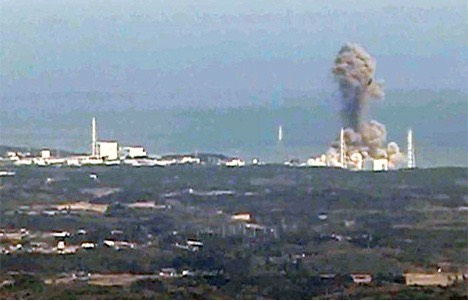
FIG. 25: Reactor 3 Plutonium MOX Criticality Event On March 14, 2011: The orange color of the explosion indicates it was a nuclear event from extremely high temperatures from melting of the MOX fuel, illegally loaded into Reactor 3 in September 2010. The black smoke characteristic of aerosolized Plutonium and Uranium metal oxides, the energetic upward chimney shaped detonation, and damage to the structures of reactors 3 and 4, indicate an energetic event much greater than possible from a chemical (hydrogen) explosion. The detonation was so powerful that it flattened and cratered the building, even though its construction was more robust, reinforced, and heavily structured than the other reactor buildings. It appears that the building had been specially constructed in the 1980’s for just this reactor and MOX fuel, at the time of President Reagan and Prime Minister Nakasone’s secret MOX agreement. MOX was introduced to Reactor 3, six months before the disaster. Source: TEPCO.
Professional Assessment of the Nuclear Detonation:
‘I watched video of the Reactor 3 explosion,’ said veteran Japanese nuclear-reactor designer Setsuo Fujiwara. ‘There was an orange flash, which suggests the temperature must have been thousands of degrees centigrade before the explosion. Then there was black smoke.’ Fujiwara insisted to me that a hydrogen explosion created white smoke and steam, as witnessed after the Reactor 1 building was torn apart. He continued, ‘The second piece of evidence is that plutonium was scattered about after this blast. Plutonium is consistent with the mixed oxide fuel [used in Reactor 3]. The third point is that the Reactor 3 building was bent like candy, unlike the Reactor 1 building, where the steel framework remained intact. So this could only mean it was a nuclear explosion.’
Mark Willacy (ABC correspondent), ‘FUKUSHIMA‘, Macmillan Australia (2013).62
NUCLEAR EXPLOSION, REACTOR 3: Reactor 3 was not just a hydrogen explosion. A violent nuclear criticality detonation with serious global consequences for the biosphere, was caused by mixed Uranium and Plutonium oxide fuel (MOX) introduced covertly to Reactor 3 in September 2010. This violated a law initiated by Governor Sato in 2002, permanently prohibiting MOX fuel in Fukushima Prefecture.37 This disaster has ultimately been set up as a permanent radiation factory with a steady output of product (poison) and a broad variety of shipping options.
Akio Takahashi, a senior Tepco official: “We do not know whether it was a hydrogen explosion, but since the government–the Nuclear and Industrial Safety Agency–is saying it is a hydrogen explosion, we can just say so–a hydrogen explosion, can’t we?”62
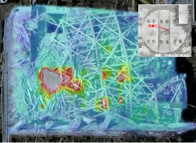
FIG. 26: Aerial IR Thermal Image of Reactor 3 and Spent Fuel Pool: Shows damaged Reactor 3 (four red spots bottom right) and Unit 3 concrete reactor well cover [FIG.27], cracked/deformed in nuclear explosion. Spent fuel pool (bottom left red/yellow area). The Unit 3 concrete reactor well cover is on top of Reactor 3, between four heat spots on right. Source: Image courtesy TEPCO, from: Tracy N. Turner, OliveBiodiesel.com, 10/12/13.63 -&- FIG. 27: Damaged Concrete Reactor Lid. (insert) Source: Image from “TEPCO Handout,” Feb. 14, 2014.64
UNDERGROUND EXPLOSIONS - DECEMBER 2013
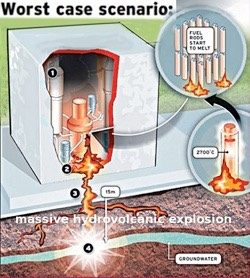
FIG. 28: Massive Hydrovolcanic Explosion Inevitable: The architect of Fukushima’s Reactor 3, Uehara Haruo, has admitted that TEPCO’s explanation of the subsurface conditions at Fukushima do not make sense, and that a China Syndrome massive hydrodynamic explosion is inevitable. He commented in Nov. 2011 that there had been no significant improvement since the disaster. Source: Image from Philosopher’s Stone65
Haruo Uehara, Japanese Architect of Fukushima Reactor #3 – further described the seriousness of the situation, saying if it reaches an underground water source, then the water supply, the ground, and sea water will also be contaminated. Furthermore, if the underground water remains heated for long enough, a massive hydrovolcanic explosion could occur.66
Definition: Hydrovolcanic explosion is a geological term referencing particularly violent volcanic eruptions involving the mixture of water with magma.
HYDROVOLCANIC NUCLEAR EXPLOSIONS: The case at Fukushima is exponentially multiplied over time by the new and unknown phenomenon, and unprecedented state of the corium, that has burned down and disappeared into the geologic environment below the plant. When it reached the groundwater in August 2011, radioactive steam was released through fissures that formed in the ground between the reactor buildings. Scientists and others have warned that at any time there could be huge underground explosions that could cause a greater global disaster than the explosions in the reactor buildings after the great Tohoku earthquake and tsunami on March 11, 2011.
The architect of Fukushima Daiichi Reactor 3, Uehara Haruo, warned on 17 November 17, 2011, that a “China Syndrome” (aka: Hydrovolcanic Explosion) was “inevitable” due to the melted atomic fuel that had escaped the container vessel and was now burning through the earth.66 He said that when it hits water in the underground environment, under the right conditions, a massive hydrovolcanic radioactive explosion will occur.66
Evidence that the underground nuclear explosions were about to occur began after mysterious steam plumes were first spotted on 19 December [2013] for a short period of time, then again on 24, 25, 27 December, and confirmed by a report Tokyo Electric Power Company (TEPCO) published on its website.
Two “low-level” underground atomic explosions occurred in the Fukushima disaster zone on December 31, 2013, the first measuring 5.1 magnitude, followed by a smaller 3.6 magnitude explosion moments later. Water pockets in a fault zone when heated can turn to steam and cause earthquakes. Since this is a very faulted geologic environment, the hot corium could cause earthquakes.
An even greater danger than the unknown state of the corium, is the unknown radioactive inventory of forty years of now badly damaged spent fuel rods, stored in earthquake damaged pools in unstable building structural conditions.
EXTREMELY HIGH TEMPERATURE MOX FUEL PARTICULATES AND NANOPARTICLE TOXICITY
All atoms of uranium are radioactive. At some point in their lifetime, they spontaneously undergo radioactive decay and emit subatomic particles and energy from their nuclei. When this process occurs in the crust of the Earth, it is of no consequence to life. Decay while the atom is entrapped within the body of a living organism, however, is altogether different. When radiation from a radioactive atom is released into a biological medium, it creates damage to the molecular structures that make up that living system. (Zimmerman p.ii.)97
About 85% of the radioactive nano-particulates from atmospheric testing, that were detonated high in the atmosphere, still remain in the Stratosphere 50 years after the end of bomb testing, where the most dangerous fission products with short half-lives have decayed. Fukushima radioactive releases into the Troposphere, have occurred at the surface of the earth, rather than high in the Stratosphere, as in the case of atmospheric testing. Ground releases of ionizing radiation are much more dangerous and efficient nuclear warfare because 95% of the radioactive particles will be rained or snowed out of air masses into the environment in 2 ½ months, creating an intense global invisible and very accelerated nuclear war. The long term effects of chronic exposure to energy released from the nucleus of atoms, will not only damage the biosphere, but will also cause a severe breakdown in the global infrastructure that we live in from the Wigner effects. Already there are many emergency landings by commercial and military jets because of pieces flying off the airplanes in mid-air, lithium batteries in the planes suddenly catching on fire due to chemical changes caused by neutron bombardment of the battery, and problems with systems under high pressure such as the hydraulics in the landing gear. Many pilots and crew members are sick and dying from the radiation exposure from flying through the contaminated air column.
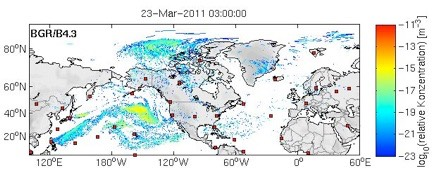
FIG. 29: Northern Hemisphere Hot Particle Contamination Nine Days After Reactor 3 Explosion: Dispersion of radioactivity by March 23, 2011, after earthquake damage to the Fukushima Dai-ichi power plant in Japan on March 11, 2011. The first plumes arrived in Eastern Russia on March 14, and on the West Coast of the U.S. about March 19, 2011. Map source: German Federal Institute for Geosciences and Natural Resources.73
There is not a single life-enhancing benefit to be derived from releasing ionizing radiation into the environment…. Ionizing radiation breaks chemical bonds, destroying in living systems biologically significant micromolecules, and as a result, altering biological function. On a planet teeming with life–impossible without the exquisitely precise interplay of biochemical choreography–ionizing radiation, concentrated by humans and then released, is a force of disorder, chaos and death. (Zimmerman p.8)97
GRAVITATIONAL FORCES: Particulates, depending on size, have very different transport and cycling properties in the environment. Particles over 0.1 micron in diameter are large enough to be subjected to gravitational forces and will settle out of air masses when air speed is less than the settling velocity of the particle (depends on diameter). Airflow, Brownian movement, and convective mixing keep particulates suspended in air until the air speed drops or they coagulate with other particles and become large enough to fall to the ground.
NUCLEATING AGENT FOR MOISTURE: They are also removed by moisture condensing on the surface of the particle, which acts as a highly charged nucleating agent attracting water. The moisture can be fog, rain, steam etc., and when enough has condensed on the particle, it becomes a raindrop and falls to the ground. The wetted surface of the particle lands on surfaces in the environment where Van der Waals forces make it impossible to remove the particle from the surface it is attached to.
SNOWFLAKES: Snowflakes, with highly charged edges, sharp points, and spines scavenge radioactive particles the most efficiently, and remove 95% of the radioactive particulates in the air. In contaminated environments, snowmelt is highly contaminated with radiation from radioactive particulates carried in air masses, and it also recharges groundwater and contaminates water that may be used in city water or for irrigation of crops and livestock.
Ms. Moret has published an article, “Populations Exposed to Environmental Uranium: Increased Risk of Infertility and Reproductive Cancers,” about the very high breast cancer rates in communities living in the San Francisco Bay Area along shorelines.74 The water for San Francisco Bay originates in the high Sierra Nevada mountains on the border of Nevada. The snowmelt ends up in San Francisco Bay and is contaminated with environmental radiation, causing breast cancer and many radiation related illnesses there including autism.
Another basic point of understanding blurred in the public mind by the nuclear establishment is gauging the effect that natural uranium has on the human body versus uranium that has been concentrated for nuclear technology. The nuclear establishment claims that the effects of eating a banana which may be relatively high in uranium content, is equivalent to an insoluble microparticle of uranium which may become lodged in the lung after a depleted uranium (DU) munition explodes on the battlefield, or when a nuclear accident such as Fukushima releases large amounts of hot particles into the air where they can be swept by the wind and then inhaled. Zimmerman97
In bodies of water, clay particles are flat and platey with highly charged surfaces that make them very efficient scavengers of charged radioactive particles. That is why the highest number of reported cancer cases, even before man-made radiation was introduced, are along riverbanks, shorelines, and mud flats where radioactive clay particles wash up on shorelines and are lofted into the air where they may be inhaled.75 (A. Haviland, London, 1875)75 There has been a 17,000% increase in lung cancer since 1850-60, that was determined by using a cancer registry in Cumbria, England, and comparing it to cancer rates in Hawaii after bomb testing.
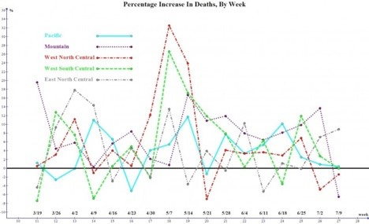
FIG. 30: Percentage Increase in Deaths By Week In U.S. March 19-July 9. By September 2011, 100,000 Americans had died from exposure to Fukushima radiation. Large releases of radiation in the form of aerosols at Fukushima from Reactor 3 and 4 nuclear events, and fires in spent fuel pools, caused large increases in U.S. deaths beginning March 19, and were very high the first week in May 2011, causing a big increase in deaths in the U.S. Environmental contamination levels (primarily from particulates and nanoparticles) depend on geography and weather. The highest increase in death rates occurred on the west slope of the Rocky Mountains (West North Central and West South Central regions) where high rainout and snowout of particles occurred. Overall the highest increase in U.S. death rates (7.1%) occurred on the West slope of the Rocky Mountains (Mountain Region) because of geography (Rocky Mountains) and weather (high rainfall/snow on west slope of the Continental Divide). However in this graph showing death rates by region, in the first week of May 2011, exposure to radiation from a Fukushima event because of weather, caused the highest numbers of deaths for the West North Central and West South Central regions where high rainout and snow-out of particles occurred. Source: Robert Soltysik76.
NANOPARTICLES: Nanoparticles are defined as 0.1 micron in diameter or smaller and are not subject to gravitational forces. For comparison, a human hair is about 80 microns in diameter. Nanoparticles are primarily formed at extremely high temperatures where molecular bonds are broken by exposure to extreme heat. They remain suspended in air masses by Brownian Motion, or air molecules colliding with them and keeping them suspended until they are removed by moisture, or coagulate into larger particles like a snowball forms and exceed 0.1 microns. Nanoparticles have not been a common phenomenon in the environment until manmade technologies such as nanotechnology have been emerging through heavy government funding in recent decades. Nanoparticles are very toxic to biological systems.
ATMOSPHERIC DUST: Particulates and nanoparticles are carried in air masses with millions of tons of seasonal atmospheric dust that is continually mixed in the atmosphere by convection. Convective mixing in the atmosphere is driven by the temperature gradient between the cold polar regions and the hot equator. Atmospheric dust storms occur most frequently during seasonal changes, and originate in desert regions. Fukushima radioactive releases will continue to be transported in atmospheric dust for thousands of years.
HOT PARTICLES: Radioactive particles formed at Fukushima by explosions, nuclear fires, and Wigner effects have been released into the atmosphere and the oceans, and are being transported throughout the global environment and biosphere as components of air masses, air and water currents, and in storms.
Recently, on May 6, 2014, information was published that indicated hot particles produced from nuclear fuel and reactor cores at Fukushima have been detected in air filters in Svalbard, Norway, more than 10,000 km from Japan.
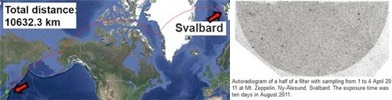
FIG. 31: Fukushima hot particles from nuclear fuel were reported in Svalbard, Norway, High Arctic: Autoradiogram of half a filter that collected particles from April 1-4, 2011, at Mt. Zeppelin, Ny-Alesund Svalbard. The autoradiogram exposure time was 10 days in August 2011. Iodine-131 and Cs-134 and Cs-137 were observed from March 25, 2011, onwards. The authors estimate that a significant part of the Fukushima-derived radioactivity is in hot particles from spent U-Pu fuel (Reactors 3 and 4) from this filter evidence. The authors stated that articles from the Fukushima disaster came from North America (not through Asia) and were distributed throughout the northern hemisphere within a few weeks.51
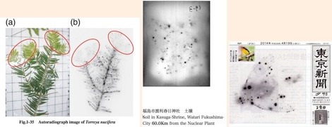
(a) (b) (c)
FIG. 32: Autoradiographs of Hot Particles Contaminating The Environment in Japan. (a) Growing tips and needles of an evergreen tree. (b) Soil sample from Kasuga Shrine, Watari Fukushima City, 60 km from the Fukushima Dai-ichi plant. (c) Dr. Mori’s famous image of a bird from Fukushima Prefecture showing radioactive dust on wing feathers and stomach area where contaminated food is digested. Source: Google search on the internet.
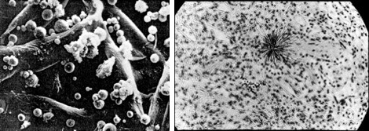
(a) (b)
FIG. 33: Depleted Uranium Hollow Spherical Particulates and Hot Particle Alpha Tracks in Lung Tissue. (a) Scanning Electron Microscope (SEM) Photomicrograph (X 1000) of depleted uranium hollow spherical particles formed at high temperatures in battlefield weapons (1979).77 (b) Lawrence Radiation Laboratory 1982: Particle of Plutonium-239 magnified 500X, in lung tissue of an ape; black star shape in center is alpha tracks emitted in 48 hours (1982).78 Cancer can start under the right conditions from one alpha particle. Both Uranium and Plutonium are alpha emitters, and can damage many cells in the range of one alpha particle. Source: Left image - U.S. Army,77 and right image Lawrence Radiation Lab (1982).78
SURFACE TO VOLUME RATIO: The surface to volume ratio is so high in hollow particles produced by extremely high heat, that it greatly multiplies the toxicity of the radiation exposure just from the much greater number (population) of particles formed (increasing concentration in air and surface area of the radioactive particles) per unit of radioactive materials vaporized. In comparison to depleted uranium hollow spheres [FIG. 33a] produced at temperatures as high as 5000 degrees C (hotter than the sun), the spheres being produced in high temperature spent fuel events at Fukushima, contain nearly 2000 different isotopes with different chemical, radioactive, and nanoparticle effects. It would be nearly impossible to even model the synergistic (multiplier) effects. However each nanoparticle (of any radioactive composition) has three biologically toxic effects: (1) the chemical effect, (2) the radiation effect, and (3) the nanoparticle or particulate effect.
CHEMICAL EFFECT: The chemical effect of a radioactive isotope, is determined by the electrons in the outer electron shell of the atom. As an isotope decays, according to the half-life, the daughter products have different chemical, radioactive, and nanoparticle effects than the parent isotope. Uranium for example has over 25 decay steps until it becomes inert as lead. One of the chemical effects of Uranium is that it is a hormone and estrogen disruptor, causing damage to the messenger molecules (ex. hormones: iodine), in systems (ex. endocrine: thyroid), organs (ex. reproductive: uterus and ovaries), and cells (ex. nanoparticle effect causes nonspecific catalytic effects) causing disruption of processes necessary for proper cell function.
RADIOACTIVE EFFECT: The radioactive effect is determined by the energy balance in the nucleus of the atom. When it is unstable it is radioactive. Depending on the half-life, the nucleus will eject energy in the form of an alpha particle, beta ray, gamma ray, or x-ray. Since elements are made in star processes, the energy in the nucleus represents the energy regime inside a star process that we cannot imagine exists from what is known on the Earth. For example, Uranium and Plutonium are created in Supernovas. Energy from a Uranium or Plutonium alpha particle, when released into the body that is basically a bag of water, 4 million electron volts of Uranium alpha energy are released. A cell made up of molecules with a binding energy of less than 10 electron volts, is directly affected by that energy and the cell dies. The 'neighborhood' effects may involve damage to as many as 80 cells or more. Alpha particles have a very short travel path of 1-1.5 cells, but gamma and x-rays can travel long distances and penetrate deeply depending on the energy released. The half-life of Uranium-238 is 4.5 billion years, the age of the Earth. Iodine-131 has a half-life of 8.04 days. Isotopes with short half-lives are very dangerous because many more, or nearly all, atoms can decay within a very short time, making the damage from the exposure acute.
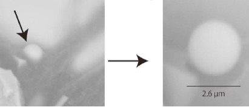
FIG: 34: Fukushima Dai-Ichi . Spherical Cs-bearing particulates were observed and collected March 14-15, 2011, at the Fukushima power plant, indicating very high temperatures during the formation of the spheres. The average diameter of the particles was 2.0 µm, larger than nanoparticles (0.1 µm or smaller). Particles larger than 0.1 µm are subject to gravitational forces and free fall in dry conditions, or in moisture onto the ground, where most remain in the top 2.5 inches of the upper dust level. Filter collection of particles indicated a concentration of about 10 radioactive particles per m3. The composition of the spherical shaped radioactive alloy formed at high temperatures, is Fe, Zn, Cs. These particles are mostly insoluble in water in the laboratory. However studies at the Nevada Test Site indicated that environmental chemicals can change solubility of radioactive particles thought to be insoluble. Radioactive materials thought to be insoluble in underground nuclear test caverns subjected to natural groundwater processes, formed colloids in the groundwater and traveled underground at a rate of about 5 miles per year over large distances. Source: Kouji Adachi et al., Scientific Reports (2013),79 and ENE News, Oct. 24, 2013.
NANOPARTICLE EFFECT: The nanoparticle effect is the most dangerous of the three effects. It is a non-specific enzyme or catalyst, and has the effect of randomly turning on and off processes in the cells of the body. In the cell the processes that make life possible, are arranged in a specific sequence with one unique catalyst or enzyme sent by the body to each specific chemical reaction. The chemical reactions are synchronized in a sequence in the cell, and each catalyst or enzyme is unique to only one reaction. The catalysts, and the order in which they cause the chemical reaction, must be in a sequence, and must be synchronized with other processes that are necessary for the cell to function properly. When radioactive nanoparticles are carried into the cells, masked in lipids or cholesterol, they are like throwing wild cards of misinformation into the cell, causing disruption of normal cell function. In other words, causing disease, long lingering illnesses, and death.
Now multiply each isotope and the three particle effects by nearly 2000 isotopes in Fukushima highly radioactive spent fuel, and it starts to be very clear what the varied isotopic products in these Fukushima discharges are doing to living things throughout the biosphere. Nuclear technologies are not compatible with life or living things.
The solubility/insolubility of particles released by nuclear weapons or radiation accidents would depend on the chemistry of the the nuclides involved. There is not a blanket answer for all radionuclides and whatever other atoms they might be bound to. Hot particles are particles composed of hundreds/thousands/millions of molecules which contain some quantity of radioactive atoms. How that particle behaves in the human body has a lot to do with how easily is dissolves in body fluid. Both soluble and insoluble particles of uranium, plutonium, radium, and the other alpha emitters release alpha particles into surrounding tissue. The significance of INSOLUBLE particles is that they can have a much longer residency inside the body, perhaps a person’s entire life. This gives them increased opportunity to successfully target biologically significant macromolecules such as DNA in their vicinity. (Zimmerman pers. comm.)97
Uranium found in nature is present in the food and water chain, is soluble, consists of about 2 millionths of a gram of daily intake. Since it is widespread throughout many organ systems and is then eliminated through bodily processes, no cluster of cells receives a concentrated dose of radiation. Therefore, Zimmerman notes that uranium from nature “presents an infinitely small hazard to the health of the organism as a whole. (Zimmerman p.46)97
Fukushima Death Increase in America, 2011
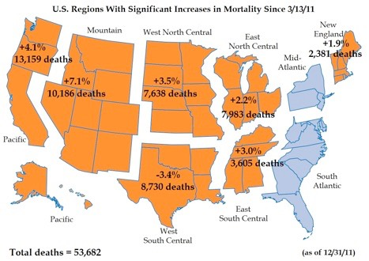
FIG. 35: Excess deaths in the US in 2011 after Fukushima. Epidemiological statistician Robert Soltysik used Centers For Disease Control (CDC) data, that represents about 25-30% of U.S. population, to produce this map. The total number of unexplained deaths from CDC data does not include children, babies, or newborns. For that reason, the conservative CDC estimate of 53,682 from March 13-December 31, 2011, projects to more than 100,000 unexplained deaths, if data on the young was included. Source: Robert Soltysik, “Excess deaths in the US in 2011 after Fukushima By Week,” Dec. 31, 2011.81
In the city of Berkeley, California, 17 excess unexplained deaths of newborns occurred between March 13 and June 18, 2011. By December 2011, a very large increase in infant mortality occurred across the U.S. for babies conceived after the Fukushima disaster. By December 2012, during the Christmas season when many people are on the streets and shopping, there was a noticeable large increase in 1-2 year olds exhibiting visible birth defects.
THE HIDDEN GENOCIDE: INFANT MORTALITY AND SPONTANEOUS LOSS IN EMBRYONIC STAGES EXPOSED TO IONIZING RADIATION
Internist and toxicologist Janette Sherman, MD, said:
Based on our continuing research, the actual death count here may be as high as 18,000, with influenza and pneumonia, which were up five-fold in the period in question as a cause of death. Deaths are seen across all ages, but we continue to find that infants are hardest hit because their tissues are rapidly multiplying, they have undeveloped immune systems, and the doses of radioisotopes are proportionally greater than for adults.82
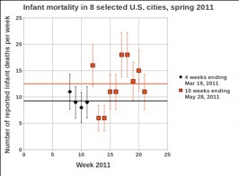
FIG. 36: Infant Mortality For 8 U.S. northwestern cities, as reported by Sherman and Mangano. The CDC data on infant mortality for 8 cities on the U.S. west coast indicates a 35% increase in infant mortality in the months after the Fukushima disaster. Nuclear criticality events at the power plant are indicated as the cause.82
The deaths after Fukushima were largest among U.S. infants under age one. According to the statistics presented in the article, the 2010-2011 increase for infant deaths in the spring was 1.8%, compared to a decrease of 8.37 % in the preceding fourteen weeks. This has the effect of shaving off population numbers of the Two most vulnerable groups, the youngest and oldest by age-group on the population curve (reducing the spread -ed)82
The Centers For Disease Control (CDC) produces a Morbidity and Mortality Weekly Report (MMWR), and the just published edition shows a baby death rate increase of 35% in eight Northwestern cities,* suspected of receiving increased radiation, carried on air currents from Japan's critically damaged nuclear plants.
(*Boise ID, Seattle WA, Portland OR, Santa Cruz CA, Sacramento CA, San Francisco CA, San Jose CA, Berkeley, CA.)
4 weeks ending March 19, 2011 - 37 deaths (avg. 9.25 per week)
10 weeks ending May 28, 2011 - 125 deaths (avg.12.50 per week)
The period covers the month before, and 2 1/2 months after, the Fukushima disaster, and the numbers are very significant. The cities mentioned in the study are all on the West Coast where very high rainfall occurs north of San Francisco in Northern California to the Canadian border. There were extremely high levels of Iodine-131, a fission product released from Fukushima criticality events, reported in the San Francisco Bay Area in that time period, as well as along the West Coast. Radioactive Iodine is very damaging to biological systems, because it acts as a hormone in the body and is utilized in every cell. Even very low levels of ionizing radiation cause illnesses and deaths in newborns, as well as damaging the endocrine system that controls growth and many other important functions.
None of the data reported to the CDC, by U.S. counties, reports spontaneous abortions in the first month after conception because it would be very difficult to collect. Often women do not even know they are pregnant in the first several weeks after conception. That is the most fragile time period in the developmental stages of an organism. In studies on pregnant mice, 80% of the embryos exposed to even low levels of ionizing radiation were spontaneously aborted, or resorbed by the pregnant female. However it is indicated here in the CDC data by the sudden increase in infant mortality [Fig.36] in weeks 12-14, and weeks 19-20, that correlate with the nuclear criticality events at Fukushima the week after the earthquake, and in the first week of May. The increases in infant mortality in those weeks also correlate with the CDC data for large increases in unexplained U.S. deaths in the same time periods in [Fig. 35].
This correlation between spikes in infant mortality, unexplained adult deaths, and radioactive events and releases from Fukushima indicates a much higher U.S. death rate than is being reported in data from the CDC. The effects of the spontaneous loss of embryos in the first few weeks after conception, is indicated by a decline in birth rates caused by exposure of the embryo to (even low) levels of ionizing radiation in utero. With the data available on the radioactive emissions from Fukushima, and changes in birth rates for that period, the impact of in utero exposure to Fukushima radiation in the embryonic developmental stage should be apparent.
While infant death spiked 35% in the affected 8 Northwest cities, the rest of the U.S. saw a 2.3% increase. In short, something in the Northwest is killing infants at a sharply higher rate in that same period. Dr Janette Sherman, a physician examining the data notes the statistics correlate with patterns seen in the wake of the Chernobyl nuclear disaster.83 Similar findings are also seen in wildlife deaths in affected areas.
WIGNER CRYSTALLIZATION
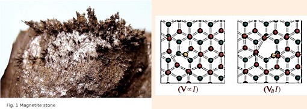
FIG. 37: WIGNER CRYSTALLIZATION ON MAGNETITE STONE. Wigner crystals (L) form across a broad spectrum of materials with a special focus on metals.85 Ionizing radiation permeates and accelerates Wigner effects, the electron interchange (interaction) among the atoms that cause lattice vacancies and displacement defects. (R) This embrittles the metal as energy is bled off from the electrons in the interchange process, and weakens the bonds in the metal lattice, compromising its integrity.86 Fukushima radiation released into the global environment is causing disintegration from Wigner effects on the global infrastructure, first discovered at the Fukushima plant and confirmed by aircraft emergencies worldwide. Source: (L) Y. Pramudya et al., Physical Review B. 84, Sept.12, 2011, fig.1.84 ; (R) C.D.Latham et al., Journal of Physics: Condensed Matter (2013) p.10: fig.7.
METAL EMBRITTLEMENT: Never mentioned about Fukushima, is the long-term breakdown due to the Wigner effect, on nearly 2000 very dangerous fission products that are embrittled and decomposing. Wigner effects will accelerate over time as radiation levels increase from continual new daily releases, and the cumulative effects increasing exposure levels at the plant. In fact workers have reported that the infrastructure of the entire plant is falling apart, and this is predominantly due to the Wigner effect and the gamma haze over the plant. The Wigner effect is being exponentially accelerated by the presence of an ionic (Bremsstrahlung) cloud sitting over the plant while it basically is “chewing everything up”.
NEUTRON BOMBARDMENT: Bombardment of metals by neutrons, as well as alpha, beta, gamma and x-rays ejected from the nucleus, cause Wigner weakening from embrittlement and crystallization that results in nuclear metals turning to highly radioactive dust and particulates as reported at Chernobyl: BBC HORIZON: Inside Chernobyl’s Sarcophagus (46 mins.)86 The intense gamma radiation now being released from the damaged reactor buildings and spent fuel pools has prevented humans from entering the buildings since the accident. Robots break down in such an environment under a “gamma cloud” that has been reported recently over much of the plant site. If water in the pools is inadequate to cool the rods, and the temperature reaches 2800 degrees C, it will vastly increase the radioactive releases and spread them over much larger areas, carried around the biosphere in air masses and ocean currents. Overheating even to 1000 degrees C in spent fuel pools produces hot particles.
WIGNER EFFECTS IN AIRLINE INDUSTRY: In the early months of 2014, three years after the Fukushima disaster, Wigner effects from the contaminated air column, up to lower orbital space, were having a noticeable effect on passenger planes flying across the Pacific north of the equator. Lithium batteries in some commercial planes were reported to be suddenly catching on fire when the planes were sitting on the ground. This was due to changes in the chemical gel in parts of the battery that are being damaged by radiation in the environment. Commercial passenger planes on trans-Pacific flights were making emergency landings on Guam, Hawaii, or other Pacific islands with mechanical problems in the landing gear where high-pressure hydraulic systems use thin metal crimping to attach hoses to fittings. The thin metal used to crimp parts together has more surface area exposed to Wigner effects than other thicker metal parts. Also planes were reported to be losing parts off of the exterior while in flight.
Although pilots and crew members globally are sick, dying, and some are even dead from chronic exposure to Fukushima radiation in the air column, domestic airlines in Japan seem to be the hardest hit:
JetStar Japan cancels flights due to "fuselage maintenance"
Jetstar Japan on Wednesday became the latest low cost carrier to announce a cancellation of flights.
The airline will cancel 101 flights between June 3 and June 11, TBS reported. However, unlike other budget airlines Peach Aviation and Vanilla Air which have had to cancel flights due to a shortage of pilots, Jetstar said the reason for its canceled flights was because fuselage maintenance did not go as planned at Kansai International Airport.
Jetstar said it will issue refunds to and transfer approximately 2,800 customers onto other airline flights during the suspension period.
Peach has canceled up to 2,128 flights through October, while Vanilla Air is cutting 154 flights — around a third of its domestic schedule — for June.
“Jetstar Japan to Cancel 101 Domestic Flights June 3-11,” May 22, 2011. http://www.japantoday.com/category/business/view/jetstar-japan-to-cancel-101-domestic-flights-june-3-1198
In March and April 2014, fourteen fighter jets at Kadena air base in Okinawa lost parts off of the exteriors in the air. Four more fighter jets at Kadena were reported to have lost their windshields in midflight. Recently two Russian fighter jets had problems landing because of Wigner effects on the hydraulic systems. Fighter jets fly at faster speeds than commercial planes, causing higher exposure to radiation, and an increase in the frequency of problems related to Wigner effects. Fighter jets also traverse the air column with more degrees of freedom than passenger planes, exposing them to radiation plumes more frequently. That explains why military fighter jets were having a higher rate of incidents than commercial jets.
By the end of May 2014, the incidence of planes having difficulties due to Wigner effects was steadily increasing and reported nearly every day, but more frequently in the northern Pacific region where Fukushima radioactive plumes and releases have badly contaminated the air column and the north Pacific ocean.
It is obvious now that the airline industry and manufacturers will have to modify systems that are more vulnerable to Wigner related mechanical problems and metal fatigue. The trusted older technology and engineering that worked, will have to be reintroduced to airplane mechanisms vulnerable to Wigner effects.
Recently in the Wall Street Journal article: “Boeing CEO Wants Incremental Innovation, Not ‘Moon Shots’” by Doug Cameron (May 21, 2014), has recognized that these problems are not going away and modifications returning to tried and true basic engineering is going to be necessary to keep planes in the air. Even Boeing is considering changes in design and production of planes due to the Wigner problems.
SPENT FUEL POOLS: In addition to those dangers, if the geometric configuration of the spent fuel in the pools changes in even small ways, such as an earthquake or typhoon, the rods can touch each other and cause criticality (a nuclear fission event) and full meltdown causing huge increases in the amount of radiation released. This would also cause fires and further major structural damage due to lethal levels of gamma rays and particulates once the water is not adequately cooling the rods. It appears in this TEPCO perimeter cam video on May 20, 2014, that this is already an occurrence in progress.
Elevated Geiger counter readings taken in Berkeley, Calif. on May 21, 2014, suggest that the event leading up to the fire started more than a week before May 20. 2014:
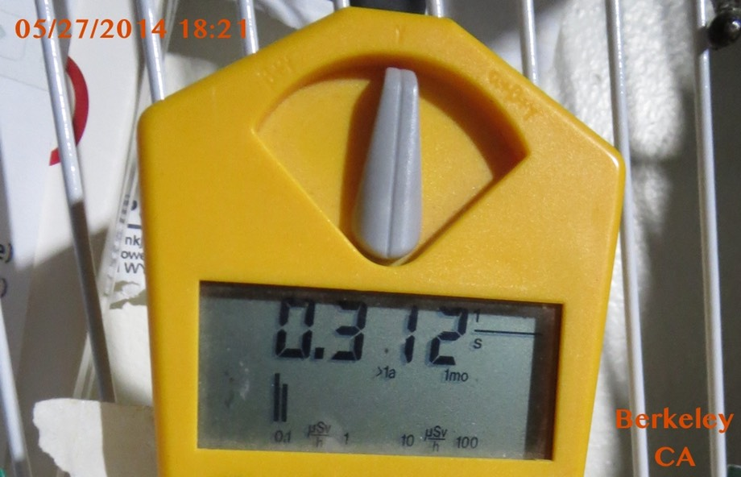
It is highly likely that this occurred in the Reactor 3 spent fuel pool long recognized as a hazard. [FIG. 24]
The very high temperatures, reached in a nuclear fire, such as this incident on May 20, 2014, in one of the Fukushima spent fuel pools, produces a radioactive gas and nanoparticles from spent fuel reaching extremely high temperatures.
As this radioactive gas, containing nearly 2000 radioactive fission product isotopes cools, the gas quenches or cools first from the outside edges of the vapor cloud, where the radioactive gas condenses, forming hollow spheres in the nanoparticle range.
FUEL RODS AND DEBRIS REMOVAL
Forty years of accumulated spent fuel, generated under U.S. pressure without a national repository in Japan, or in the U.S. for that matter, forced the storage of highly dangerous spent fuel rods containing nearly 2000 dangerous isotopes under non-optimal conditions. This created conditions very sensitive to a complete breakdown in any disaster, much less before two different compositions of Plutonium MOX fuel were added to Reactor 3 in Sept. 2010, and to Reactor 4 on March 11, 2011, the day of the earthquake disaster.
TEPCO UNDER EXTREME U.S. PRESSURE TO REMOVE FUEL RODS FROM REACTOR 4. WHY?
In the Fall of 2013, TEPCO announced that under extreme pressure from the U.S., and over an extended period in the future, TEPCO would be moving thousands of fuel rods from the damaged reactor buildings to dry cask storage. The announcement also conveyed the urgency to remove them from Reactor Unit 4 was the first priority. TEPCO acknowledged that it would be a very “delicate” [meaning “extremely dangerous”] operation since the damaged spent fuel pools containing thousands of assemblies of spent fuel rods were in an “unknown condition,” and “some had already burned”. Images released by TEPCO document the damaged spent fuel assemblies in damaged fuel pools. TEPCO also reported that some of the spent fuel rods had ruptured, spilling fuel pellets out of the damaged rods. There were also indications from photos released by TEPCO and by their own admission, that fuel pools contained assemblies and rods that had been damaged before the earthquake disaster. Under the right conditions, if the rods touch each other, an even greater than Fukushima-scale nuclear disaster can occur.
This operation may be the most foolish decision TEPCO has made at Fukushima Dai-ichi. There are now many images (photos and video) released by TEPCO since March 11, 2011, indicating that the extreme situation is out of control. Because of exposure to high levels of radiation over the past three years, high rates of deaths and illnesses have occurred in trained workers. TEPCO lacks well-trained and highly skilled workers to resolve the situation safely.
This disaster requires expertise from the international community to resolve it. In fact, the disaster response initially should have included international experts from Russia, France, the U.S., and other countries, who offered assistance and specialized equipment to Japan during the first days after the Tohoku earthquake and tsunami. There are many examples to show that they were unceremoniously turned away and ignored by TEPCO officials and the Japanese Government.
Japan’s former Ambassador to Switzerland, Mr. Mitsuhei Murata, was invited to speak at the Public Hearing of the Budgetary Committee of the House of Councilors [Senate] on March 22, 2012, on the Fukushima nuclear power plants accident.
Before the Committee, Ambassador Murata strongly stated that if the crippled building of reactor unit 4 — with 1,535 fuel rods in the spent fuel pool 100 feet (30 meters) above the ground — collapses, not only will it cause a shutdown of all six reactors but will also affect the common spent fuel pool containing 6,375 fuel rods, located some 50 meters from Reactor 4.
In both cases the radioactive rods are not protected by a containment vessel; dangerously, they are open to the air… The greatest single threat to humanity.
This would certainly cause a global catastrophe like we have never before experienced. He stressed that the responsibility of Japan to the rest of the world is immeasurable. Such a catastrophe would affect us all for centuries.

FIG. 38: Damage And High Radiation Levels In Reactor 4 Cooling Pools Shortly After Fukushima Explosions: A few days after the disaster, Reactor building 4 (l) appeared to have an emergency water supply (orange rig on right of building). In a closeup (r) steam indicating overheating, appears to be coming from a cooling pool, directly under the green Hitachi fuel pool crane structure located 100 feet off the ground. Images courtesy of TEPCO.

(a) (b)
FIG. 39: Tepco Images Of Damaged Spent Fuel Assemblies And High Radiation Levels In Cooling Pools A Month After Fukushima Disaster. Many of the fuel assemblies stored in cooling pools (a) at Reactor 4, TEPCO admitted in early April 2011, are damaged. Footage shows debris scattered over spent fuel assemblies at Reactor 4. TEPCO announced in early May 2011 that a water sample from a Reactor 3 pool (b) had extremely high radiation levels (per cubic centimeter). Iodine-131 was 1 million times higher than background. None of these substances were detected before the disaster, during a March 2, 2011, inspection. Images courtesy of TEPCO.
Recent unreported preparation activity to remove damaged fuel rods from the Reactor 4 structure to dry casks for storage, was revealed to have started in early July 2013 in a presentation at Harvard University by TEPCO engineer Kenji Tateiwa. Dated images from his presentation indicated that actual fuel removal had started as early as October, but elevated radiation readings reported in the San Francisco Bay Area indicate that it started in late summer of 2013. (K. Tateiwa, “Fukushima Nuclear Accident and Roadmap for Decommissioning: A TEPCO Nuclear Engineer’s Perspective”, presentation Dec. 3, 2013 at Harvard University, p. 32.)
Geiger counter monitoring in the San Francisco Bay Area by the author, in the late summer of 2013 to the present (January 2014), indicated large unexplained increases of nearly 100% in airborne radiation measurements compared to readings post-Fukushima disaster prior to July 2013 [Reported by author: pre-Fukushima readings 0.07-0.13 Bq; post-Fukushima readings 0.21-0.24 Bq.; post-July 2013 readings 0.27-0.339 Bq.]. In mid-December 2013, even larger increases and spikes in Bay Area radiation levels were reported widely in the internet media. These unexplained increases were most likely caused by extremely hazardous attempts to remove fragile, damaged bundles, and burned fuel rods from the Reactor 4 cooling pools, where they had been packed so tightly into the fuel pools that the geometric configuration of the bundles in the pool restricted water flow and cooling. At Fukushima, removing damaged and burned fuel rods after this nuclear disaster from any cooling pool would be extremely dangerous, much less 6 damaged reactors with Plutonium added to the hazards.
The fuel rods must be kept submerged and must not touch each other or break. Nuclear experts warn any mishaps could cause an explosion many times worse than in March 2011.
Mitsuhei Murata, Japan’s former ambassador to Switzerland and an anti-nuclear campaigner, said a series of incidents over the past 30 months – including radioactive water leaks – have called into question TEPCO’s ability to carry out this critical operation.
“The Unit 4 contains 10 times more Cesium-137 than Chernobyl. So in case the worst occurs, a total withdrawal [from the site] will be imposed, which means this can be considered as the beginning of the ultimate catastrophe of the world and the planet,” said Murata. …

BREMSSTRAHLUNG: electromagnetic radiation produced by the deceleration of a charged particle when deflected by another charged particle, typically an electron by an atomic nucleus. The Plant area dose is 8.04 mSv/y due to the tanks. Workers are exposed to very high radiation levels without touching the water.
FIG. 40: Bremsstrahlung Radiation Creating Gamma Haze Over Plant. Hundreds of tanks of contaminated water are stored on the grounds of Fukushima, with radiation emissions so high that a permanent gamma x-ray haze danger is exposing not only workers, but areas outside the plant. This will greatly increase the Wigner effect and accelerate plant disintegration, as well as make it impossible for workers to live or function there. SOURCE: Mochizuki, “Tepco “There is no way to shield Bremsstrahlung from contaminated water tanks””, January 12, 2014. http://fukushima-diary.com/2014/01/tepco-there-is-no-way-to-shield-bremsstrahlung-from-contaminated-water-tanks/
A video clip (03:01 mins.) from the TEPCO site monitor cameras taken on November 18, 2013, is testimony that removal of fuel rods is far more dangerous than maintaining them in stasis while new procedures to deal with this catastrophe at an appropriate level are devised and tested. This video clip indicates that TEPCO does not have the capacity to undertake such an operation, further threatening the very future of life on this planet, and an accelerated and certain immediate increase in deaths in Japan and beyond.
In this TEPCO video clip outside the Reactor 4 building, recorded on September 5, 2013, a small group of workers is seen outside the building, using a crane to remove bundles of spent fuel rods from the rubble of the destroyed reactor building 4. The workers are about to transfer the fuel rod package with a crane, into the dry cask on the ground, against a backdrop of other cranes parked on the site.
FIG. 41: FUKUSHIMA DAIICHI CRANES USED TO MOVE SPENT FUEL RODS Source: TEPCO onsite cameras: http://youtu.be/J_SA3G1X7F4
Suddenly, [at 01:35 mins.], the foreshadowing of a global disaster begins as one of the parked cranes (left crane -ed) gradually begins its collapse, from metal fatigue caused by exposure to extremely high and prolonged radiation levels. This crane may have been there the longest and received the highest exposure. Not even one of the workers noticed the crane collapsing, but not a surprise since TEPCO is using the Yakuza to recruit drunks and homeless people as unskilled workers for $12 an hour. They too are receiving the same dose of radiation that the steel in the crane was exposed to, while undertaking such a critical operation requiring highly skilled and trained workers, and once again TEPCO is criminally negligent. In this new game of “TEPCO Nuclear Roulette,” if the workers had been using this crane to move the spent fuel, it could have resulted in a rerun of the unprecedented explosions of the original disaster – and TEPCO would have been measuring the explosions for height as 3/11 was recreated.

FIG. 42 Bremsstrahlung: The NWO has Handed Entropy a Big Roll of Dance Tickets.
⚛⚛💀⚛⚛💀⚛⚛💀⚛⚛💀⚛⚛💀⚛⚛💀⚛⚛
REFERENCES:
1. Prouty, L.F., The Secret Team: The CIA and Its Allies In Control of the United States and the World, Skyhorse Publishing (2008).
2. Vital Statistics of Japan 2004 vol.1, Ministry of Health, Labour and Welfare, Health and Welfare Statistics Assoc., Table 5.15, p. 203.
3. Beckford, M., “The Queen of England Deals Extensively in $17 Trillion Depleted Uranium Trade”, Daily Mail UK Online, February 28, 2014. HYPERLINK http://www.nationofchange.org/queen-england-deals-extensively-depleted-uranium-trade-1393604116
4. Streifer, B., “Hungnam, North Korea: Delving into Pyongyang’s Long Nuclear Past”, DCBureau, June 25, 2013. ⚛ http://www.dcbureau.org/201306258778/national-security-news-service/hungnam-north-korea-delving-into-pyongyangs-long-nuclear-past.html#sthash.GTPU3IUX.dpuf
5. Lobaczewski, A.M., Political Ponerology: A Science of the Nature of Evil Adjusted for Political Purposes, Red Pill Press (1998 and 2006).
6. L.Weiss, “The 1979 South Atlantic Flash: The Case for an Israeli Nuclear Test*”, July 30, 2011; graphs from US Govt., “Bhangmeter light patterns detected by a pair of sensors on Vela satellite 6911 on 22 Sep 1979”, from ⚛ http://www.npolicy.org/article_file/The_1979_South_Atlantic_Flash__The_Case_for_an_Israeli_Nuclear_Test.pdf
7. Geo Swan, “Vela Incident”, Wiki (map). ⚛ http://en.wikipedia.org/wiki/Vela_Incident
8. Eyre, P., “The US and UK lost three nuclear weapons each!” Part 3, Peter Eyre Patch, March 4, 2010. ⚛ http://petereyrepatch.blogspot.com/2010/03/us-and-uk-lost-three-nuclear-weapons_04.html
9. Eyre, P., “The US and UK lost three nuclear weapons each!” Part 4, Peter Eyre Patch, March 5, 2010. ⚛ http://petereyrepatch.blogspot.com/2010/03/us-and-uk-lost-three-nuclear-weapons_05.html
10. “David Cameron secret 1989 S. Africa nuclear arms deal behind Mandela's back, raises £17.9m 4 Tories?”, posted on YouTube 12/7/13. ⚛ https://www.youtube.com/watch?v=8Q1EN5_9nIk
11. Eyre, P., “Pandora's Box becomes more target specific” Part 5, Peter Eyre Patch, April 10, 2011. ⚛ http://petereyrepatch.blogspot.com/2011/04/pandoras-box-becomes-more-target_10.html
12. Moret, L, A.L.Webre, “Fukushima HAARP nuclear attack by CIA, DOE, BP for London banks” - May 9, 2011 ⚛ http://www.examiner.com/exopolitics-in-seattle/leuren-moret-fukushima-haarp-nuclear-attack-by-cia-doe-bp- for-london-banks ⚛ YouTube: http://www.youtube.com/watch?v=htsWup50i3E&feature=youtu.be
13. Moret, L., “Global Implications of Sellafield, ‘Irish Sea Coast Effect’ and Beyond” ⚛ NAMASTE (2009). http://namastepublishing.co.uk/global-implications-of-sellafield/
14. “Nagaoka Model of the Atom”: ⚛ http://imgarcade.com/1/nagaoka-model-of-the-atom/
15. Klaus Hentschel, “Atomic Models, Nagaoka’s Saturnian Model”, Compendium of Atomic Physics (2009): pp.22-23.
16. Richard Rhodes, The Making of the Atomic Bomb, Touchstone NY (1986).
17. “Notes on Japan A-bomb program found: Two scientists' notebooks in U.S. cast light on little-understood project”, Japan Times, August 4, 2006. ⚛ http://www.japantimes.co.jp/news/2006/08/04/national/notes-on-japan-a-bomb-program-found/#.U30LwShiE00
18. David Snell, “Japan Developed Atom Bomb; Russia Grabbed Scientists”, Atlanta Journal Constitution, October 3, 1946.
19. Michael Craddock, “CYCLOTRONS AND FFAGS: FROM NISHINA’S PIONEERING WORK TO RI-BEAM FACTORY”, (2010), pp.1-9. ⚛ http://www.nishina.riken.go.jp/researcher/seminar_past/nishina120/craddock.pdf
20. David Snell, “Japanese Atomic Bomb: Title”, Subtitle 2. ⚛ http://352858242579970503.weebly.com/subtitle-2-snell.html
21. Streifer, B., “Hungnam, North Korea: Delving into Pyongyang’s Long Nuclear Past”, DCBureau, June 25, 2013. ⚛ http://www.dcbureau.org/201306258778/national-security-news-service/hungnam-north-korea-delving-into-pyongyangs-long-nuclear-past.html#sthash.GTPU3IUX.dpuf
22. Robert Wilcox, Japan’s Secret War: Japan’s Race Against Time to Build Its Own Atomic Bomb, Marlowe & Co., New York, 1995.
23. “Atom Bomb Experiment Undertaken by Former Japanese Armed Forces in Korean Peninsula Just Prior to the End of the War, According to Secret Investigation by GHQ [ed. General Headquarters, U.S. Army”, Tokyo Shimbun
24. Del Tredici, R., At Work In The Field of the Bombs, Harper & Row Pub. NY, 1987, Theodore B. Taylor p.58 (miniaturize nuclear weapons). Sam Cohen p.157-9 (neutron bomb).
25. Godfrey Hodgson, The Colonel: The Life and Wars of Henry Stimson 1867-1950, Alfred A. Knopf (1990).
26. Deborah Shapley, “Nuclear Weapons History: Japan's Wartime Bomb Projects Revealed”, Science, Jan. 13, 1978. ⚛ http://352858242579970503.weebly.com/subtitle-3-japan.html
27. “Japanese Atomic Bomb” Subtitle 3. ⚛ http://352858242579970503.weebly.com/subtitle-3-japan.html
28. Henry S. Lowenhaupt, “Chasing Bitterfeld Calcium”, July 2, 1996, p.2. ⚛ https://www.cia.gov/library/center-for-the-study-of-intelligence/kent-csi/vol16no4/html/v17i1a04p_0001.htm
29. Joseph Trento, “United States Circumvented Laws To Help Japan Accumulate Tons of Plutonium”, DCBureau.com, April 9, 2012.
30. Sterling and Peggy Seagrave, GOLD WARRIORS: America’s Secret Recovery of Yamashita’s Gold, Verso London, NY (2003), p.6.
31. Ralph Payne, “Okinawa Reversion Ceremony,” Stars and Stripes, May 15, 1972. ⚛ http://www.stripes.com/blogs/archive-photo-of-the-day/archive-photo-of-the-day-1.9717?month=0&year=2012
32. Takuya Suzuki, “Nuclear Leverage: Long an Advocate of nuclear energy, Nakasone now says Japan should go solar,” Asahi Shimbun, July 21, 2011. ⚛ http://ajw.asahi.com/article/0311disaster/Aj201107214814
33. D. Kashi, “USS Ronald Reagan Crew Members Sick With Cancer Three Years After Fukushima Contamination [PHOTOS],” IBTimes, Dec. 24, 2013. ⚛ http://www.ibtimes.com/uss-ronald-reagan-crew-members-sick-cancer-three-years-after-fukushima-contamination-photos-1519170
34. INTERVIEW: Eisaku Sato (Former Governor of Fukushima Prefecture) Dec.6, 2012: Nuclear Free Now. ⚛ YouTube: https://www.youtube.com/watch?v=58vhL_pPIgE
35. Takafumi Yoshida, “INTERVIEW/ Yasuhiro Nakasone: Learn lessons from Fukushima crisis and continue to promote nuclear energy,” Asahi Shimbun, May 23, 2011. ⚛ http://ajw.asahi.com/article/0311disaster/fukushima/AJ201105232599
36. TBS and JNN TV: VIDEO: “Kei Sugaoka GE/Tepco Whistleblower” (May, 2011) ⚛ 福島原発陰謀 東電トラブル隠し事件 ⚛ https://www.youtube.com/watch?v=fBjiLaVOsI4 [09:29]
37. Anthony T., “Kei Sugaoka the man who shutdown 17 nuclear reactors in Japan”, May 8, 2011, CRITICALITY a critical thinking blog. ⚛ http://criticality.co/kei-sugaoka-the-man-whoshutdown-17-nuclear-reactors/
38. Kim Zetter, “Did a U.S. Government Lab Help Israel Develop Stuxnet?”, WIRED, January 17, 2011. ⚛ http://www.wired.com/2011/01/inl-and-stuxnet/all/
39. W. J. Broad, J. Markoff, D. E. Sanger, “Israeli Test on Worm Called Crucial in Iran Nuclear Delay”, New York Times, January 15, 2011. ⚛ http://www.nytimes.com/2011/01/16/world/middleeast/16stuxnet.html?pagewanted=all&_r=0
40. M. Kelley, “The Stuxnet Attack On Iran's Nuclear Plant Was 'Far More Dangerous' Than Previously Thought”, Business Insider, Nov. 20, 2013. ⚛ http://www.businessinsider.com/stuxnet-was-far-more-dangerous-than-previous-thought-2013-11
41. Kiyomi Obo, “Two men`s dreams of future energy Atom turned to nightmare of Fukushima”, Global Analysis 2012. ⚛ http://globalanalysis2012.blogspot.com/2012/10/two-mens-dreams-of-future-energy-atom.html
42. “Matsutarō Shōriki”, Wikipedia. ⚛ http://en.wikipedia.org/wiki/Matsutarō_Shōriki
43. “JAPAN | Ex-PM Nakasone, influential Shoriki played key role in promoting nuclear power,” Fukushima News Online, August 2, 2011. ⚛ http://fukushimanewsresearch.wordpress.com/2011/08/02/japan-ex-pm-nakasone-influential-shoriki-played-key-role-in-promoting-nuclear-power/
44. The official report of The Fukushima Nuclear Accident Independent Investigation Commission, The National Diet of Japan (2012), p.16. ⚛ http://www.nei.org/corporatesite/media/filefolder/Summary_of_Independent_Investigation_Commission_on_Fukushima_7-2012_2.pdf
45. “People Leave Area Fearing For Their Health As Contamination Spikes,” Russia Today, March 19, 2014 ⚛ http://www.democracynow.org/2014/3/11/ex_japanese_pm_on_how_fukushima
46. Mochizuki, “Prof. Takeda ‘3/31/2015 is the last day of Japan’”, Fukushima Diary , April 27, 2012. ⚛ http://fukushima-diary.com/2012/04/prof-takeda-3312015-is-the-last-day-of-japan/ ⚛ original in Japanese ⚛ http://takedanet.com/2012/04/32015331_272e.html?utm_source=twitterfeed&utm_medium=twitter
47. D.H. Cook, S.R. Greene, R.M. Harrington, S.A. Hodge, and D.D. Yue, “Station Blackout at Browns Ferry Unit One – Accident Sequence Analysis,” Oak Ridge Ntl. Lab., Nov. 1981, NUREG/CR-2182 (ORNL/NUREG/TM-455/V1). ⚛ http://web.ornl.gov/info/reports/1981/3445600211884.pdf
48. Yuji Okada, Tsuyoshi Inajima, and Shunichi Ozasa, “Japan’s Fukushima Reactor May Have Leaked Radiation Before Tsunami Struck,” Bloomberg, May 19, 2011. ⚛ http://www.bloomberg.com/news/2011-05-19/fukushima-may-have-leaked-radiation-before-quake.html
49. Amy Goodman, “Ex-Japanese PM on How Fukushima Meltdown was Worse Than Chernobyl & Why He Now Opposes Nuclear Power,” Democracy Now, March 11, 2014. ⚛ http://www.democracynow.org/2014/3/11/ex_japanese_pm_on_how_fukushima
IMAGE: M. Dickie, “Japan: More than a moment,” ft.com, April 20, 2011 ⚛ http://www.ft.com/intl/cms/s/0/b711f3d6-6b7e-11e0-a53e-00144feab49a.html#axzz333EQIRvI
50. ENE News, “Japan ex-Prime Minister: Fukushima very close to ‘China syndrome’ — First time in history where melted fuel “burned through, leaking to outside of container” — Reactor melted down 4 hours after M9.0 quake (VIDEO),” March 12, 2014. https://www.youtube.com/watch?v=J3Z2fgjSa3Y
51. Paatero, J., J. Vira, M Siltari-Kauppi, J. Hatakka, K. Holmen, Y. Visanen, “Airborne fission products in the high Arctic after the Fukushima nuclear accident”, Jour. Environ. Radioact. Dec. 2012, v.114, pp.41-47
52. Takasaki CTBT Station Report Feb. 22, 2011, Japan. ⚛ http://www.cpdnp.jp/pdf/120227Takasaki_report_Feb22.pdf
53. Sergei A. Pakhomov, Yuri V. Dubasov, “Estimation of Nuclear-Energy Excursion Possibility during Fukushima-1 NPP Accident,” CTBTO: Science and Technology 2013, June 17-21, 2013, Hofburg Palace, Vienna, Austria. ⚛ http://www.ctbto.org/fileadmin/snt2013/posters/T2-P22.pdf
54. Mochizuki, “[Reactor3] Possible second meltdown happened 3/21 ~ 3/22/2011,” Fukushima Diary, July 7, 2012. ⚛ http://fukushima-diary.com/2012/07/reactor3-possible-second-meltdown-happened-321-3222011/
55. Mochizuki, “There was nuclear fuel in reactor 4,” Fukushima Diary.com, January 31, 2012. ⚛ http://fukushima-diary.com/2012/01/nuclear-fuel-reactor-4/
56. Yoichi Shimatsu, “MOX nuclear fuel – the secret and so dangerous ingredient in the Fukushima No 4 nuclear cooling pond,” Nuclear News, 11/14/2013. ⚛ http://nuclear-news.net/2013/11/26/mox-nuclear-fuel-the-secret-and-so-dangerous-ingredient-in-the-fukushima-no-4-nuclear-cooling-pond/
57. IMAGE: “Distribution of fuel rods in a MOX assembly”. ⚛ http://www.laradioactivite.com/en/site/illustration/images/Mox_assemblage_En.htm
58. V.D. Rusov et al., “Fukushima Plutonium Effect and Blow-Up Regimes in Neutron-Multiplying Media,” World Journal of Nuclear Science and Technology (2013), p.9. ⚛ http://arxiv.org/pdf/1209.0648.pdf
59. Godfrey, “Fukushima: the possibility of a massive explosion”, March 29, 2011. ⚛ http://www.spiderbomb.com/blog/?p=351
60. Zbiegnew Brzezinski, The Grand Chessboard: American Primacy And Its Geostrategic Imperatives, Basic Books (1998).
61. Photo courtesy of TEPCO, in “Fukushima Daiichi Reactor Number 3 and 4 Damage Analyses,” TheBigDustup.blog, March 23, 2011. ⚛ http://bigdustup.blogspot.com/2011/03/fukushima-daiichi-reactor-number-3-and.html
62. ENE News, “Reactor Designer: “It was a nuclear explosion” at Fukushima Unit 3; Plutonium scattered after blast — ABC: “There’s willful denial and lying going on here, even at the highest levels” (AUDIO),” November 5, 2013. ⚛ http://enenews.com/reactor-designer-it-was-a-nuclear-explosion-at-fukushima-unit-3-plutonium-was-scattered-after-blast-abc-theres-willful-denial-and-lying-going-on-here-even-at-the-highest-levels
63. IMAGE courtesy of TEPCO in Tracy N. Turner, “Obama's Clean, Green 2013 Fukushima Plumegate Machine II,” Oct. 12, 2013. ⚛ http://olivebiodiesel.com/ObamaFukushimaPlumegate2/obamafukushimaplumegate.html
64. IMAGE: Reactor Lid – “TEPCO Handout,” Feb. 14, 2014.[JP]: ⚛ http://www.tepco.co.jp/nu/fukushima-np/handouts/2014/images/handouts_140214_04-j.pdf ⚛ [EN]: https://docs.google.com/document/d/1WCKXdZPV9_OgPnOeVNrspzJi-SM4DbZZ9ejBCFD8AQo/edit
65. “Architect of Fukushima’s Reactor 3 warns of massive hydrovolcanic explosion,” Philosophers Stone, Nov. 21, 2011. ⚛ http://philosophers-stone.co.uk/wordpress/2011/11/architect-of-fukushima’s-reactor-3-warns-of-massive-hydrovolcanic-explosion/
66. “Japan – RED ALERT … Mr. Haruo Uehara — Japan’s #3 Fukushima Reactor Designer Admits — Fukushima Is Now — the China Syndrome”, Before Its News, Nov. 20, 2011. ⚛ http://beforeitsnews.com/health/2011/11/1403299-1403299.html
67. Image courtesy of NHK, from “Fukushima Update: 9/3/13,” Daily Kos, Sept. 3, 2013. ⚛ http://www.dailykos.com/story/2013/09/03/1236012/-Fukushima-Update-9-3-13#
68. (a) L.Moret and Alfred Webre: “Leuren Moret - Fukushima HAARP nuclear attack by CIA, DOE, BP for London banks,” May 9, 2011. ⚛ http://www.examiner.com/exopolitics-in-seattle/leuren-moret-fukushima-haarp-nuclear-attack-by-cia-doe-bp-for-london-banks ⚛ YouTube: http://www.youtube.com/watch?v=htsWup50i3E&feature=youtu.be [01:05:13]
(b) L. Moret, Alfred Webre, “Fukushima tectonic nuclear warfare monitored by world HAARP partners,” May 21, 2011. http://www.examiner.com/exopolitics-in-seattle/leuren-moret-fukushima-tectonic-nuclear-warfare-monitored- by-world-partners ⚛ YouTube: http://www.youtube.com/watch?v=Z95xcFW8lPU&feature=youtu.be [01:10:33]
(c) L.Moret and Alfred Webre: “Leuren Moret, Alfred Webre, “LEUREN MORET: FUKUSHIMA TECTONIC WARFARE EXPOSES HAARP MONEY TRAIL, SPONSORS, PARTNERS, BANKERS,” May 27, 2011. ⚛ YouTube: http://www.youtube.com/watch?v=DBLxJXy-XfA [01:17:05]
69. Leuren Moret, “H.A.A.R.P.: High Frequency Active Auroral Research Program,” Oct. 22, 2011.
70. ABC NEWS (AU), “Japan Earthquake 2011.” ⚛ http://www.abc.net.au/news/specials/japan-quake-2011/ http://eternian.wordpress.com/tag/ocean-currents-map-of-japan/
71. VIDEO source TEPCO, from “Fukushima nuclear plant rocked by second reactor explosion – video,” Guardian March 14, 2011. [39 sec.] ⚛ http://www.theguardian.com/world/video/2011/mar/14/fukushima-nuclear-plant-reactor-explosion-video
72. Leuren Moret, “FUKUSHIMA: IMPACT OF FALLOUT ON OCEANS” Part 1, Subheading “The Groves Memo: Radiological Targeting Of Civilian Populations,” LeurenMoret.info, January 31, 2014. ⚛ currents/fukushima-impact-of-fallout.html
73. Map source: German Federal Institute for Geosciences and Natural Resources, from Rockwell, “Fukushima-Related Radioactive Materials Measured Across Entire Northern Hemisphere,” Reverendroc.com, April 8, 2011. ⚛ http://reverendroc.com/News/?cat=14
74. Leuren Moret, “Populations Exposed to Environmental Uranium: Increased Risk of Infertility and Reproductive Cancers,” Namaste Magazine (2005). ⚛ http://namastepublishing.co.uk/population-exposed-to-environmental-uranium/
75. Haviland, A., The geographical distribution of heart disease and dropsy, cancer in females and phthisis in females in England and Wales, London: Swan Schonnenschein, 1875.
76. Robert Soltysik, “Excess deaths in the US in 2011 after Fukushima,” optimal prediction.com, Dec. 31, 2011. ⚛ http://optimalprediction.com/files/deathsweek52.pdf
77. Glissmeyer, J.A., and J. Mishima, “Characterization Of Airborne Uranium From Test Firings Of XM774 Ammunition”, p. 54. Prepared for the U.S. Army under U.S. Department of Energy Contract EY-76-C-06-1830. Pacific Northwest Laboratory November 1979 1nov79, 3 3679 00053 3200PNL-2944UL-35. R. L. Gilchrist, Project Manager, November 1979. Prepared for the U.S. Army under U.S. Department of Energy Contract EY-76-C-06-1830. Pacific Northwest Laboratory Richland, Washington 99352. DOE Richland, Washington. ⚛ http://www.mindfully.org/Nucs/Airborne-Uranium-Glissmeyer1nov79.htm Lawrence Radiation Laboratory, Berkeley, Calif., September 20, 1982.
78. Del Tredici, R., At Work In The Field of the Bombs, Harper&Row NY, 1987, p.39; image taken at Lawrence Radiation Laboratory, Berkeley, Calif., September 20, 1982.
79. Kouji Adachi, Mizuo Kajino, Yuji Zaizen & Yasuhito Igarashi, “Emission of spherical cesium-bearing particles from an early stage of the Fukushima nuclear accident”, Scientific Reports (Nature Publishing Group), Aug. 30, 2013;
80. “Scientists: ‘Spheres’ of radioactive material from Fukushima reported for first time — Ball-like particles composed of cesium, iron, zinc — Solid and insoluble in water — Impact on human health needs to be examined (PHOTOS)”, Oct. 24, 2013. ⚛ http://enenews.com/scientists-spheres-radioactive-material-fukushima-reported-first-time-ball-like-particles-composed-cesium-iron-zinc-solid-insoluble-water-impact-human-health-be-examined-photos
81. Robert Soltysik, “Excess deaths in the US in 2011 after Fukushima,” optimal prediction.com, Dec. 31, 2011. ⚛ http://optimalprediction.com/wp/fukushima-research/
82. J.J. Mangano, J.D. Sherman, “An unexpected mortality increase in the United States follows arrival of the radioactive plume from Fukushima: is there a correlation?,” Int J Health Serv. 2012;42(1):47-64.
83. Alexeiy V. Yablokov, Vasily B. Nesterenko, and Alexey V. Nesterenko, Chernobyl: Consequences of the Catastrophe for People and the Environment, Consulting Editor: Janette D. Sherman-Nevinger. New York Academy of Sciences (2009). ⚛ Free pdf: http://www.strahlentelex.de/Yablokov%20Chernobyl%20book.pdf ⚛ Purchase for $10: http://janettesherman.com/books/
84. Pramudya, Y., H. Terletska, S. Pankov, E. Manousakis, and V. Dobrosavljević, “Nearly Frozen Coulomb Liquids”, Physical Review B. 84, 125120 (Sept.12, 2011). Department of Physics and National High Magnetic Field Laboratory, Florida State University, Tallahassee, Florida 32310 http://badmetals.magnet.fsu.edu/coulombliquids.html
85. C.D.Latham, M.I.Heggie1,M.Alatalo, S.Oberg, P.R.Briddon, “The contribution made by lattice vacancies to the Wigner effect in radiation-damaged graphite”, Journal of Physics: Condensed Matter, 25 (2013) 135403 (13pp), p.10: fig.7
86. BBC Horizon (1996): Inside Chernobyl's Sarcophagus. https://www.youtube.com/watch?v=daGtxor44XY
87. Fire at Fukushima week of May 19, 2014. http://s981.photobucket.com/user/artemisb13/media/FUKU%20VIDEO/May20fubar_zps42012a75.mp4.html
88. Former Ambassador to Switzerland, Mr. Mitsuhei Murata speech to Public Hearing of the Budgetary Committee of the House of Councilors in Diet, March 22, 2012. ⚛ http://enenews.com/former-japan-ambassador-warns-govt-committee-a-global-catastrophe-like-we-have-never-before-experienced-if-no-4-collapses-common-spent-fuel-pool-with-6375-fuel-rods-in-jeopardy-would
89. Image courtesy TEPCO, in “The Greatest Single Threat to Humanity – Fukushima Nuclear Reactor no. 4 Raises New Global Worries”, April 12, 2012. ⚛ http://www.earthchangesaffirmations.com/april-2012.html
90. “Damaged fuel pool 100’ in air” ⚛ http://www.unwelcomeguests.net/671_-_The_Nuclear_Fuel_Pool_of_Damocles_(Fukushima,_Chernobyl_and_PBDEs)
91. “The Greatest Single Threat to Humanity – Fukushima Nuclear Reactor no. 4 Raises New Global Worries”, April 12, 2012, courtesy TEPCO. ⚛ http://www.earthchangesaffirmations.com/april-2012.html
92. Fukushima: Highest Radioactive Iodine-131 Level in Spent Fuel Pool at Reactor No. 3 – Over 1,000,000 time normal. May 10, 2011 ⚛ http://www.infiniteunknown.net/2011/05/10/fukushima-highest-radioactive-iodine-131-level-in-spent-fuel-pool-at-reactor-no-3-so-far-over-1000000-times-normal/
93. K. Tateiwa, “Fukushima Nuclear Accident and Roadmap for Decommissioning: A TEPCO Nuclear Engineer’s Perspective”, presentation Dec. 3, 2013 at Harvard University, p. 32.
94. Image courtesy of TEPCO, from Mochizuki, “Tepco “There is no way to shield Bremsstrahlung from contaminated water tanks””, January 12, 2014. http://fukushima-diary.com/2014/01/tepco-there-is-no-way-to-shield-bremsstrahlung-from-contaminated-water-tanks/
95. Yoichi Shimatsu, “Official Coverup Obscures The Collapse Of Reactor 4,” Rense.com, June 30, 2012. http://www.rense.com/general95/offic.html
96. Images courtesy TEPCO, in “Fukushima: Review of an INES Class 7 Accident,” April 20, 2011. http://theautomaticearth.blogspot.com/2011/04/april-20-2011-fukushima-review-of-ines.html
97. Paul Zimmerman, A Primer In The Art Of Deception: The Cult Of Nuclearists, Uranium Weapons And Fraudulent Science, (2009).
98. “Jetstar Japan to cancel 101 domestic flights June 3-11,” May 22, 2011. ⚛ http://www.japantoday.com/category/business/view/jetstar-japan-to-cancel-101-domestic-flights-june-3-11
99. “Fukushima nuclear plant rocked by second reactor explosion – video,” Guardian March 14, 2011. Video [39 sec.] courtesy TEPCO. http://www.theguardian.com/world/video/2011/mar/14/fukushima-nuclear-plant-reactor-explosion-video
❁ ❁ ❁
Visitors to LM:GNC
Leuren Moret: Global Nuclear Coverup
- ❁ Currents
- ⚛ Radiation Omnicide 👥
- 🎥 UC, Davis, Katehi, Illuminati ✠
- 🌎✟☦ One World Religion 🎭
- ♞ Atlanticists v. Putin et al ⚪️
- ✈️ 3 NWO False Flags Connected ➷
- 🔪Ukrainian ✠ Wikileaks 👀 Interview 🎥
- 🚫 Out of Eurasia 🚫
- 💀 Jade Helm, International Implications, NWO Rollouts ⏰
- 🌿 Essential Oils, Nutrition, Frequencies & Health 🌺
- 🎯 R.F.D.E. | H.A.A.R.P. | N.L.P. ⚡️
- ⚛ Leuren Moret: Hiroshima, Nagasaki, Fukushima ⚛
- ❦ Moret & Battis: Jade Helm ❦
- 🌎 New World Order America 🇺🇸
- ⨳ Geopolitics Ukraine | E.U. Judo 🌍
- 👥 Template: Jade Helm
- ✠ America’s Domestic Pacification ✠
- ♨️ Chernobyl, Zaporozhye, Blackmail ⚛
- 💉 REBRANDING DISASTER🔪
- 👤 Eurasian Enigma Arises
- 🔴 Donetsk Nuclear Explosion ⚫️
- 🌍 21st Century Silk Road 🌏
- 🌍 Africa ☗
- ♞ Balkans, The Nameless Triangle
- 🌏 China 🌝
- 🌍 Eurasia 🔴
- 💣 Israel: Out of Erupt!
- ✠ Jesuits/Templar’s Origins & Aims
- 👺 SOROS ✠ NWO 📚 Hacked ✍
- ➴ Pyatt’s ✠ SOROS ♞ Breakfast 🍳
- Breedlove, GOOD RIDDANCE
- 🎱 Obama’s $3 Billion Eurocon 💸
- 🌍 A Psychopath’s Psychopath ✠
- 🔫 Global Hit Squad 💣
- 💀 Neo-Capitalist’s Slave Trade 💰
- 🇺🇸 Bio: Undermine Control
- ↷ Fine Evening For A Minuet ↶
- ✠ Slavery, Then & Now
- 💣 JCS Operation Northwoods
- ✠ The Three Secret Meetings
- Korea Yeonhee (연희) Nuclear Kabuki Theatre
- 🌍 Middle East 💣
- 💣 ISIL: Battered, Retreating 💀
- 🔥 Turkish Coup Attempt 💣
- ⚑ Muslim Brotherhood and ISIS ⚫️
- 🔫💰💉Daesh Terrorist Multi-Tool🔪💣💊
- 🚧 US and Turkey, NWO the Kurds 💸
- ✠ Hitler Bragged on Jesuits ✠
- 🍞 Their Daily Bread & Rubble 💣
- 🔪“Erdogan is Strengthening ISIS”💣
- 🇫🇷 Russia Reveals ISIS’ Money 💰💰
- "Raqqa's Rockefellers” ISIS Full Frontal
- ☞ Smashing Turkey’s Game❌
- 🌍 Juncker | E.U. | Direction ⤣
- 🔪 GLADIO Wolf Kills Russian Pilot ✈︎
- ✈︎ Washington’s SU-24 🎯
- 🌐 Turkey, NATO, War Crime? 🔎
- ➷ 449-Down, ISIL to Go 💣
- 🌎 North America 🔥✠
- 🇷🇺 Russia 🇷🇺
- 🇷🇺 PUTIN OVERHAULS KREMLIN 🏰
- ☛ Who Created ISIS ☚
- 🍳 Food Supply Compromised 🎱
- 🌍 Putin re Ceasefire Syria 🌐
- 👤 Cold War Re-Run 👀
- 🌐 Minsk 101 | Theatre of the Absurd 🌍
- 🌐 Geopolitical Original Sin 🌍
- ♘ Russian Troops | Turkish Border ♘
- 📚 Educating Charlie Rose 🔑
- 🌍 Lavrov's Munich Speech
- 🎱 US Embassy Media Fail 🎭
- ✠ ♛🃏 Putin’s Jar Of Spiders
- 🎱 MOSSAD’S ON THE DOORSTEP 💣
- 📄 This Document is Dynamite 📄
- ♔ The Golden Trap
- ❁ Russian Fusion-Fission
- ❁ Putin’s 7-Point Plan
- ❁ Russian Position Speech
- ✈︎ Ukraine, MH-17, Jesuits Flagged! BRICS Undermined?
- ⏰ Ukraine? 🔥 Bail Out! ✈️
- 💦👤 Psychotropic Zombification ☔️
- 💣 Odessa Trade Union Murders 🔥
- 🃏 Nothing Personal, Just Business 💰
- 💉 BioWeapons for Depopulation 💀
- ⚛ Nuclear Coverup Ukraine | Mines of Zholti Vody 💀
- 🔥 Unsustainable Ukraine 👥
- ☗ ASHES TO ASHES 💀
- 🔪Ukrainian Wikileaks 👀
- ☞ Dispatches From the Front 🔫
- 💣 The Ukrainian Failed State 🌍
- 🔑 Our Decisions Define Us🔑
- ✠ Child Abuse 💀
- 💣 Mozgovoi’s Murder 🔪
- 🎱 Yatsenyuk's Russian Threat 🔮
- ||| Prison Ukraine |||
- ✍ CyberBerkut Reports 👥
- ♨️ Crazy Arseniy’s -USED- Ukraine Fire Sale! ♨️
- ✝ AZOV CRUCIFIXION ✝
- 👤 Eyewitness Debaltsevo Cauldron 💀
- ✍ Historic Slaviansk Doctor Interviewed
- 💀 The Tragedy of Uglegorsk
- ♟ Jan. 2015 Minsk Fail 🃏
- ➷ Tochka Found, Debaltsevo Locked
- 🌍 World Facing Second Chernobyl
- ✈︎ MH-17 AND THE Jesuit Minuet
- ✈︎ MH-17, Jesuits Flagged!, Video
- 💀 Death’s Drummers
- 👤 DPR! Novorossiya Calling
- 💀 Ukraine’s Chernobyl Armor
- 🎱 Gas to Ukraine Blocked
- ❁ Global Nuclear Theatre: Donbass
- ✠ GHOSTS of the 51st BRIGADE
- ❁ Novorossiya: Strelkov Briefing
- 👤 Open Letter to President Putin
- ✈︎ MH-17 Dutch Interim Report
- 💣 Surrendering UA Murdered by Punatives
- ♟ Mutiny of the Euro-Integrators ♟
- ➹ View from Ukraine Operating Room
- ❁ Ukraine’s Violent Escalation
- ❁ Ukrainian Soldier’s Cry for Help
- ⧱ Occupied Ukraine ⧱
- ❁ US State's Nuland Directs Ukrainian Coup
- 📯 Ukraine Deputies Knew Before Maidan
- ❁ Health In 2015
- 💉 Vaccines 💀
- 🎥 Geopolitics, Jesuits & History
- 🎥 Rebranded ✠ The Jesuits ✠
- ⚛ Zaporhyze Nuclear Events & Geopolitics
- ❁ Fukushima Polar Vortex Radiation ❁
- 💀 Embrace, Enfold, Extinguish
- ✈︎ Fear of Flying . . . (1of4)
- ❁ Fukushima: Impact of Fallout On Oceans (Pt.1)
- ❁ Fukushima: Impact of Fallout On Oceans (Pt. 2)
- ❁ North America, Middle East and Fukushima
- ❁ DHS/Napolitano Berkeley Template
- ❁ Fukushima Radiation, Ecocide & Tesla Technology
- ✈︎ Flight 370 Downing
- ✈︎ MH370: The Follow-Up
- ❁ Domestic Radiation Issues
- ❁ Fukushima: Hawaii, Pacific Is. - Unsafe
- ⚛ Fukushima Reactors, Breakdown 1-6 ⚛
- 🌏 International Sites Featuring LM:GNC
- ❁ On To Mongolia 🎥
- 🎥 LKM On Fairdinkum Media 🎥
- ❁ Editorial Page
- ❁ Conversations 📬
- ❁ Waves
- ⚛ Radiation Around The Nation 🌎
- ⚛ Your Radiation #73/74, Sep 10 - 24, 2016 🌎
- ⚛ Your Radiation #71/72, Aug 27 - Sep 10, 2016 🌎
- ⚛ Your Radiation #69/70, July 30 - August 13, 2016 🌎
- ⚛ Your Radiation #67/8,--July 16-30, 2016 🌎
- ⚛ Your Radiation #65-6,--July 2-16, 2016 🌎
- ⚛ Your Radiation #64, July 2-9, 2016 🌎
- ⚛ Your Radiation #62-3, June 18 - July 2, 2016 🌎
- ⚛ Your Radiation #61, June 11-18, 2016 🌎
- ⚛ Your Radiation #60, June 4-11, 2016 🌎
- ⚛ Your Radiation #59, May 28 - June 4, 2016 🌎
- ⚛ Your Radiation #58, May 21-28, 2016 🌎
- ⚛ Your Radiation #57, May 14-21, 2016 🌎
- ⚛ Your Radiation #56, May 7-14, 2016 🌎
- ⚛ Your Radiation #55, Apr 30 - May 7, 2016 🌎
- ⚛ Your Radiation #54, Apr 23-30, 2016 🌎
- ⚛ Your Radiation #53, Apr 16-23, 2016 🌎
- ⚛ Your Radiation #52, Apr 9-16, 2016 🌎
- ⚛ Your Radiation #51, Apr 2-9, 2016 🌎
- ⚛ Your Radiation #47-50, Mar 5 - Apr 2, 2016 🌎
- ⚛ Your Radiation #46, Feb 27-Mar 5, 2016 🌎
- ⚛ Your Radiation #45, Feb 20-27, 2016 🌎
- ⚛ Your Radiation #44, Feb 13-20, 2016 🌎
- ⚛ Your Radiation #43, Feb 6-13, 2016 🌎
- ⚛ Your Radiation #42, Jan 30 - Feb 6, 2016 🌎
- ⚛ Your Radiation #41, Jan 23-30, 2016 🌎
- ⚛ Your Radiation #40, Jan 16-23, 2016 🌎
- ⚛ Your Radiation #39, Jan 9-16, 2016 🌎
- ⚛ Your Radiation #38, Jan 2-9, 2016 🌎
- ⚛ Your Radiation #37, Dec 26 - Jan 2, 2015|16 🌎
- ⚛ Your Radiation #36, Dec 19-26, 2015 🌎
- ⚛ Your Radiation #35, Dec 12-19, 2015 🌎
- ⚛ Your Radiation #34, Dec 5-12, 2015 🌎
- ⚛ Your Radiation #33, Nov 28 - Dec 5, 2015 🌎
- ⚛ Your Radiation #32, Nov 21-28, 2015 🌎
- ⚛ Your Radiation #31, Nov 14-21, 2015 🌎
- ⚛ Your Radiation #30, Nov 7-14, 2015 🌎
- ⚛ Your Radiation #29, Oct 31 - Nov 7, 2015 🌎
- ⚛ Your Radiation #28, Oct 24-31, 2015 🌎
- ⚛ Your Radiation #27, Oct 17-24, 2015 🌎
- ⚛ Your Radiation #26, Oct 10-17, 2015 🌎
- ⚛ Your Radiation #25, Oct 3-10, 2015 🌎
- ⚛ Your Radiation #24, Sep 26 - Oct 2, 2015 🌎
- ⚛ Your Radiation #23, Sep 19-26, 2015 🌎
- ⚛ Your Radiation #22, Sep 12-19, 2015 🌎
- ⚛ Your Radiation #21, Sep 5-12, 2015 🌎
- ⚛ Your Radiation #20, Aug 29 -Sep 5, 2015 🌎
- ⚛ Your Radiation #19, Aug 22-29, 2015 🌎
- ⚛ Your Radiation #18, Aug 15-22, 2015 🌎
- ⚛ Your Radiation #17, Aug 8-15, 2015 🌎
- ⚛ Your Radiation, August 1-8, 2015 🌎
- ⚛ Your Radiation, July 24-31, 2015 🌎
- ⚛ Your Radiation, June 26 - July 24, 2015 🌎
- ⚛ Your Radiation, June 19-26, 2015 🌎
- ⚛ Your Radiation, June 12-19, 2015 🌏
- ⚛ Your Radiation, June 5-12, 2015 🌎
- ⚛ Your Radiation, May 29 - June 5, 2015 🌎
- ⚛ Your Radiation, May 22-29, 2015 🌎
- ⚛ Your Radiation, May 15-22, 2015 🌎
- ⚛ Your Radiation, May 8-15, 2015 🌎
- ⚛ Your Radiation, May 2-8, 2015 🌎
- ⚛ Your Radiation, April 24 - May 1, 2015 🌎
- ⚛ Your Radiation, April 17-24, 2015 🌎
- ⚛ Your Radiation, April 9-16, 2015 🌎
- 🔥 Fire at Oak Ridge 💥
- 💥 NANOWEAPONRY 💥
- 🐄 Radioactive Cattle Teeth, Fukushima 🏭
- 📰 WikiLeaks 🔎 NSA and More 🔦
- ✨Nano ‘Hall of Mirrors’⚡️
- ⚛ 💀 ⚛ into the Hudson River 🌎
- 🚿 Flint, Metropolitan Eugenics 💀
- 🌍 Existential Threat? ☛NATO☚
- 💉 Gates, Poroshenko; Conspiracy, Government 🎯
- 💉 Gates-Poroshenko ZPG Ukraine 💀
- 💀 Paris Massacre Perpetrators 👤
- 🔪 Delgado, Mind Control ♟
- 🌎 MOST NUKED NATION ON EARTH 🌎
- 🎯 Radio Frequency Directed Energy 🎯
- ⚛ Please, Don’t Pick the Mutants 🌻
- ⨳👤⨳ Space-Based Weapons Ban
- √ Saudi OP Strategy Success
- ♨️ Gallery ♨️ Chernobyl Fire ♨️ 2015 ♨️
- 🌍 Monsanto Backdoors E.U.
- 🎉 Crimea’s 1st Anniversary Album 🎉
- 🌏 21st Century Eschalon
- 📰 International Headline Watch 🌏
- ✄ Prouty Place ✑ CUT THE BULL ✂︎
- 🌏 How To Wreck The Environment
- 🇯🇵 Plutonium Isotopes Off Japan
- 🌍 Depopulation Agenda: Europe 👤
- 🔪💉Cease Covert Depopulation Letter🔪💉
- ❁ Dutch Apologize for MH-17 Lies
- ❁ Pacific Dead from Fukushima
- ❁ Strange Fish Story
- ❁ Blood Composition of Monkeys Altered Near Fukushima
- ❁ Secret Army Bases
- ⚛ Fukushima Plutonium Effect ⚛
- ➷ RAND Demographic Military Power ➷
- ⚛ Depleted Uranium | DNA Damage ⚛
- ❁ Hidden Genocide: by Dr. Ernest Sternglass
- ❁ Space Preservation Act of 2001
- ❁ 1972 Rothschild Ball
- ❁ Unsafe Radwaste Disposal
- ♆ Fallout and Reproduction of Ocean Fish Populations
- ⚛ Radiation Around The Nation 🌎
- ❁ Lifestyle
- ❁ Archive
- ⚛ 61 Years of Omnicide ⚛
- 📻 Nanoparticle Toxicity with Leuren Moret ❦
- ❁ New Bombs and War Crimes in Fallujah
- ❁ Global Climate Change . . .
- ⚛ International Radiation Distribution ⚛
- 💀 Depleted Uranium’n’DNA 😱
- ❁ UC Regents Lose Nuke Pgm
- ❁ DU-Trojan Horse
- ❁ LM:GNC (Pt1)
- ❁ LM:GNC (Pt2)
- ❁ World Uranium Weapons Conference 2003
- ⚛ Radionuclide ReMobilization Abatement
- ❁ "America First" Transcription
- ❁ "Whale Archive" Transcription
- ⚛ ⚛ ⚛ Location, Leuren Moret: Global Nuclear Coverup ⚛ ⚛ ⚛
- ❁ Glossary
- ❁ Contact